Removing CR in multiple exposures
A common task in astronomical image reduction is the removal of cosmic rays (CRs). When possible, observers typically acquire three or more equivalent exposures, which can then be median-combined to effectively eliminate cosmic rays. However, this approach has limitations when exposure times are long and cosmic ray rates are high: individual pixels may be affected by cosmic rays in multiple exposures. In such cases, while median combination removes most cosmic rays from the final image, some contaminated pixels may remain uncorrected.
We encountered this issue while reducing observing blocks from the MEGARA instrument at GTC. Each observing block consists of three identical science exposures acquired with the same exposure time, with telescope pointing maintained by an autoguiding system. MEGARA is a fiber-fed optical IFU installed at the Gran Telescopio Canarias [Carrasco and others, 2018, Gil de Paz and others, 2018].
Overall description
Note
Long-exposure observations heavily affected by cosmic rays rarely have more than three equivalent exposures available. With four exposures, median combination still fails when a pixel is contaminated in two exposures, requiring then at least five exposures to address this issue. However, obtaining five or more truly equivalent long exposures is challenging: extended integration times introduce variations in the signal due to changes in airmass, atmospheric transmission, sky line intensity, pointing drift, instrument flexures, and other factors. These variations make it unreasonable to treat the images as equivalent. Conversely, if an observing program does provide five or more exposures, median combination typically yields satisfactory results, and the method described below may be unnecessary. For these reasons, the following description assumes three available exposures.
The method described here applies when three (or more, if necessary) equivalent exposures are available. It identifies pixels affected by cosmic rays in more than half of the exposures—cases where median combination fails to remove the contamination. Detection in the median-combined image uses two complementary procedures to enhance effectiveness:
The Median-Minimum (MM) diagnostic diagram technique [Cardiel et al., 2026], which identifies pixels that deviate unexpectedly in a diagnostic diagram constructed from the median and minimum signal values of each pixel across the different exposures. This algorithm assumes that the detector’s gain and readout noise are known with reasonable accuracy, enabling prediction of the typical difference between median and minimum signal values for each pixel across the three exposures as a function of the minimum signal (after bias subtraction). Using numerical simulations, a detection boundary is established in the MM diagnostic diagram: pixels above this boundary have a high probability of cosmic ray contamination in two of the three exposures. We refer to this method as \(\color{blue}\textbf{M.M.Cosmic}\).
One of the existing algorithms for detecting and correcting cosmic rays in individual exposures. Here, these algorithms identify residual cosmic-ray pixels in the median combination—likely corresponding to pixels contaminated in two of the three exposures. The selected algorithm is also used to detect cosmic rays in the individual exposures and in the mean combination. We have incorporated four well-documented algorithms implemented in Python.
The L.A. Cosmic technique [van Dokkum, 2001], a robust algorithm for cosmic-ray detection based on Laplacian edge detection. We use the implementation provided by the Python package ccdproc through the \(\color{gray}\texttt{cosmicray_lacosmic()}\) function, which itself relies on the Astro-SCRAPPY package [McCully, 2014]. This algorithm is widely used for cosmic ray detection in individual exposures. We refer to this method as \(\color{BrickRed}\textbf{L.A.Cosmic}\color{black}.\)
The PyCosmic method [Husemann et al., 2012], a robust method based on L.A. Cosmic and specifically developed for detecting cosmic rays in fiber-fed integral-field spectroscopic exposures from the Calar Alto Legacy Integral Field Area (CALIFA) survey [Sánchez and others, 2012]. We refer to this method as \(\color{BrickRed}\textbf{PyCosmic}\color{black}.\)
The deepCR method [Zhang and Bloom, 2020], a deep-learning-based algorithm for cosmic ray identification and image inpainting. We refer to this method as \(\color{BrickRed}\textbf{deepCR}\color{black}.\)
The Cosmic-CoNN method [Xu et al., 2023], an alternative deep-learning algorithm trained on large ground-based cosmic ray datasets. We refer to this method as \(\color{BrickRed}\textbf{CoNN}\color{black}.\)
Each of these four methods for correcting individual exposures can be used in conjunction with \(\color{blue}\textbf{M.M.Cosmic}\color{black}\). For convenience, we collectively refer to them as \(\color{red}\textbf{Aux.Cosmic}\color{black}\). Note that only one \(\color{red}\textbf{Aux.Cosmic}\) method can be used at a time with \(\color{blue}\textbf{M.M.Cosmic}\).
Note
The practical application of the M.M.Cosmic algorithm for removing cosmic rays in MEGARA science exposures is described in this link within the MEGARA cookbook.
Script usage
Warning
This functionality is still under development and not yet fully consolidated. Future modifications may be introduced as testing continues with additional images.
The numina script for detecting and correcting residual cosmic rays using \(\color{blue}\textbf{M.M.Cosmic}\) and any \(\color{red}\textbf{Aux.Cosmic}\) method is numina-crmasks. Its execution is straightforward:
(venv_numina) $ numina-crmasks params_example1.yaml
The numina-crmasks script takes a single argument: the name of a YAML-formatted file. This file provides default values for multiple parameters, allowing users to focus on modifying only those they wish to experiment with.
Note
YAML is a human-readable data serialization language. For details, see the YAML syntax description.
An example params_example1.yaml file is shown below and available
here:
1#------------------------------------------------------------------------------
2# YAML file with parameters for numina-crmasks
3#------------------------------------------------------------------------------
4# List of input images
5images:
6 - fake_1a.fits
7 - fake_2a.fits
8 - fake_3a.fits
9extnum: 0 # extension number (0: primary)
10#------------------------------------------------------------------------------
11# General parameters
12gain: 1.0 # conversion electron/ADU
13rnoise: 3.4 # readout noise (ADU)
14bias: 0.0 # (ADU)
15#------------------------------------------------------------------------------
16#------------------------------------------------------------------------------
17requirements:
18 # Define crmethod using any of the following methods:
19 # mm_lacosmic | mm_pycosmic | mm_deepcr | mm_conn |
20 # lacosmic | pycosmic | deepcr | conn
21 crmethod: mm_pycosmic
22 use_auxmedian: False # use aux. median insteand of minimum value
23 interactive: True # display and pause between plots
24 flux_factor: none # none | auto | [list of values]
25 flux_factor_regions: # list of regions, FITS criterium
26 # - [xmin, xmax, ymin, ymax] # <-- format (no need to uncomment this)
27 apply_flux_factor_to: simulated # original | simulated (data)
28 dilation: 0 # global dilation (integer)
29 regions_to_be_skipped: # list of regions, FITS criterium
30 # - [xmin, xmax, ymin, ymax] # <-- format (no need to uncomment this)
31 pixels_to_be_flagged_as_cr: # FITS criterium, first pixel is [1, 1]
32 # - [X, Y] # <-- format (no need to uncomment this)
33 pixels_to_be_ignored_as_cr: # FITS criterium, first pixel is [1, 1]
34 # - [X, Y] # <-- format (no need to uncomment this)
35 pixels_to_be_replaced_by_local_median: # FITS criterium
36 # - [X, Y, X_width, Y_width] # <-- format (no need to uncomment this)
37 verify_cr: False # ask for confirmation
38 semiwindow: 15 # to display residual CR hits
39 color_scale: zscale # minmax | zscale
40 maxplots: -1 # -1: all CR detected are plotted
41 #-----------------------------------------------------------------------------
42 # Parameters for L.A. Cosmic (van Dokkum 2001), as implemented in ccdproc
43 # (based in https://github.com/astropy/astroscrappy).
44 # https://ccdproc.readthedocs.io/en/latest/api/ccdproc.cosmicray_lacosmic.html
45 la_gain_apply: True # Return gain-corrected data
46 la_sigclip: [5.0,3.0] # Laplacian-to-noise limit for cosmic ray detection
47 la_sigfrac: [0.3,0.3] # Fractional detection limit for neighboring pixels
48 la_objlim: [5.0,5.0] # Contrast between Laplacian and fine struct. images
49 la_satlevel: 65535.0 # Saturation level of the image (ADU)
50 la_niter: 4 # Number of iterations to perform
51 la_sepmed: True # Use the separable median filter (not the full filter)
52 la_cleantype: meanmask # median | medmask | meanmask | idw
53 la_fsmode: convolve # median | convolve
54 la_psfmodel: gaussxy # gauss | moffat | gaussx | gaussy | gaussxy
55 la_psffwhm_x: 2.5 # FWHM of the PSF (X direction) to generate the kernel
56 la_psffwhm_y: 2.5 # FWHM of the PSF (Y direction) to generate the kernel
57 la_psfsize: 11 # size of the kernel
58 la_psfbeta: 4.765 # Moffat beta parameter
59 la_verbose: True # Print to the screen or not
60 la_padwidth: 10 # Padding to mitigate edge effects [not in original]
61 #-----------------------------------------------------------------------------
62 # Parameters for PyCosmic (Husemann et al. 2012)
63 # Note: gain, rdnoise and bias will be set to the general values
64 pc_sigma_det: [5.0,3.0] # Detection limit above the noise
65 pc_rlim: [1.2,1.2] # Detection threshold
66 pc_iterations: 5 # Number of iterations
67 pc_fwhm_gauss_x: 2.5 # FWHM of the Gaussian smoothing kernel (X direction)
68 pc_fwhm_gauss_y: 2.5 # FWHM of the Gaussian smoothing kernel (Y direction)
69 pc_replace_box_x: 5 # Median box size (X axis) to estimate replacement
70 pc_replace_box_y: 5 # Median box size (Y axis) to estimate replacement
71 pc_replace_error: 1.0E6 # Error value for bad pixels
72 pc_increase_radius: 0 # Dilation (pixels)
73 pc_verbose: True # Provide information during the processing
74 #-----------------------------------------------------------------------------
75 # Parameters for deepCR (Zhang & Bloom 2020)
76 dc_mask: ACS-WFC # ACS-WFC | WFC3-UVIS
77 dc_threshold: 0.5 # Probability threshold to be applied
78 dc_verbose: True # Provide information during the processing
79 #-----------------------------------------------------------------------------
80 # Parameters for Cosmic-CoNN (Xu et al. 2023)
81 nn_model: ground_imaging # ground_imaging | NRES | HST_ACS_WFC
82 nn_threshold: 0.5 # Probability threshold to be applied
83 nn_verbose: True # Provide information during the processing
84 #-----------------------------------------------------------------------------
85 # Parameters for the Median-Minimum method (Cardiel et al. 2026)
86 mm_synthetic: median # median | single (to simulate M.M. diagram)
87 mm_hist2d_min_neighbors: 0 # minimum number of neighbors in hist2d bins
88 mm_ydiag_max: 0 # maximum Y value in hist2d (0=auto)
89 mm_dilation: 1 # dilation around suspected pixels (integer)
90 # rectangular region to determine offsets between individual images:
91 mm_xy_offsets: # XYoffsets between exposures (pixels)
92 # - [xoffset, yoffset] # pair of values for each individual exposure
93 mm_crosscorr_region: null # [xmin, xmax, ymin, ymax] FITS criterium | null
94 mm_boundary_fit: spline # piecewise | spline
95 mm_knots_splfit: 5 # used only for spline fit
96 mm_fixed_points_in_boundary:
97 # - [x, y, weight] # weights are optional(ignored) for spline(piecewise) fit
98 mm_nsimulations: 10 # simulations for each set of images
99 mm_niter_boundary_extension: 5 # iterations to extend the spline fit
100 mm_weight_boundary_extension: 2 # multiplicative increment in weigth
101 mm_threshold_rnoise: 3.0 # threshold value (in readout units)
102 mm_minimum_max2d_rnoise: 5.0 # minimum max2d (in readout units)
103 mm_seed: 123456 # random seed for reproducibility
104 #----------------------------------------------------------------------------
Indentation in YAML files is critical, as it defines the file’s structure. YAML
uses spaces (not tabs) to represent nesting and parent-child relationships
between data elements. Comments can be inserted using the # symbol;
everything after # on the same line is ignored by the YAML parser.
At the top level, there are six parameters (highlighted with a yellow background in the example above):
images: List of input FITS images to be processed. Each image is specified on an indented line below this keyword, starting with a dash followed by a space and the FITS filename.extnum: Extension number of the FITS file to be read (e.g.,0for the primary extension).gain,rnoise, andbias: General image parameters including detector gain (electrons/ADU), readout noise (ADU), and bias level (ADU). This file uses parameters for preprocessed MEGARA exposures where the bias level has already been subtracted and the signal converted to electrons (hencebias=0andgain=1.0).requirements: This section contains six parameter blocks:General execution parameters: Control the overall behavior of numina-crmasks.
Parameters for the \(\color{BrickRed}\textbf{L.A.Cosmic}\) technique: Identified by the
la_prefix, these parameters configure the Laplacian Cosmic Ray Detection Algorithm [van Dokkum, 2001]. Default values are provided. These parameters (without thela_prefix) are passed to the \(\color{gray}\texttt{cosmicray_lacosmic()}\) function.Parameters for the \(\color{BrickRed}\textbf{PyCosmic}\) technique [Husemann et al., 2012]: Identified by the
pc_prefix. These parameters (without thepc_prefix) are passed to the \(\color{gray}\texttt{det_cosmics()}\) function.Parameters for the \(\color{BrickRed}\textbf{deepCR}\) technique [Zhang and Bloom, 2020]: Identified by the
dc_prefix. These parameters (without thedc_prefix) are passed to the \(\color{gray}\texttt{deepCR()}\) class.Parameters for the \(\color{BrickRed}\textbf{CoNN}\) technique [Xu et al., 2023]: Identified by the
nn_prefix. These parameters (without thenn_prefix) are passed to the \(\color{gray}\texttt{init_model()}\) and \(\color{gray}\texttt{detect_cr()}\) functions.Parameters for the \(\color{blue}\textbf{M.M.Cosmic}\) method: Identified by the
mm_prefix, these control the computation of the detection boundary in the MM diagnostic diagram.
A detailed description of all parameters in the requirements section is
provided below in the description of parameters in
requirements section.
Note
Users of the MEGARA data reduction pipeline will recognize the requirements
section as identical to that in the observation result YAML file used by the
reduction recipe MegaraCrDetection. This means the entire section of the
params_example1.yaml file from line 17 onward can be inserted
into the observation result file of the corresponding recipe. For details, see
CR not removed by median
stacking in the
MEGARA cookbook.
Script output
After execution (several examples are shown below), the numina-crmasks script generates several FITS files:
combined_mean.fits: Simple mean combination containing all cosmic rays from the three exposures. Useful for comparison with cleaned combinations to identify pixels that remain improperly cleaned.combined_median.fits: Simple median combination of the three exposures without additional processing. Saved for comparison with subsequent combinations.combined_mediancr.fits: Median combination of the three exposures, replacing pixels suspected of cosmic ray contamination in two of the three exposures with the minimum value across exposures. The suspected CR pixels are those identified by either \(\color{blue}\textbf{M.M.Cosmic}\) or by \(\color{red}\textbf{Aux.Cosmic}\). When the replaced pixels genuinely correspond to double-contaminated cases, using the minimum value is equivalent to relying on a single exposure. Since only one measurement is available, there is no reason to assume this value is biased toward lower-than-expected levels.Instead of using the minimum value, flagged pixels can be replaced using values computed by the \(\color{red}\textbf{Aux.Cosmic}\) method by setting
use_auxmedian=True.combined_meancrt.fits: First attempt at mean (not median) combination of the three individual exposures. A direct mean combination is computed first, producing an image containing all cosmic rays from the individual frames. A cosmic ray mask is then generated from this image using the selected \(\color{red}\textbf{Aux.Cosmic}\) method. Masked pixels are replaced with their corresponding values fromcombined_mediancr.fits.combined_meancr.fits: Second attempt at mean combination. Individual cosmic ray masks are generated for each of the three exposures using the selected \(\color{red}\textbf{Aux.Cosmic}\) method. A mean combination is then performed using each image with its corresponding mask, with masked pixels replaced by the minimum value.combined_meancr2.fits: Refined mean combination obtained by applying the chosen \(\color{red}\textbf{Aux.Cosmic}\) method tocombined_mediancr.fits. Detected pixels are replaced with their minimum values, correcting residual cosmic ray pixels that survived the mean combination.combined_min.fits: Image containing the minimum value of each pixel across all individual exposures.
Each FITS file contains the combined image in the primary extension, along with
two additional extensions: VARIANCE (storing the variance) and MAP
(containing the number of individual exposures used to compute each pixel’s
combined value).
(venv_numina) $ fitsinfo combined_m*fits
Since the mean has lower standard deviation than the median, the
combined_meancrt.fits, combined_meancr.fits, and combined_meancr2.fits
images are generally preferable to combined_mediancr.fits. Among these, tests
suggest that combined_meancr2.fits tends to yield the best results. However,
we recommend comparing the different outputs to determine which works best for
your specific dataset.
In addition to the FITS images described above, the numina-crmasks script generates an additional FITS file compiling the masks and auxiliary data used to produce the various image combinations.
crmasks.fits: FITS file containing 6 cosmic ray masks, each stored in a separate extension.
(venv_numina) $ fitsinfo crmasks.fits
In this case, the primary extension does not contain an image, but rather a small set of parameters stored as FITS keywords, along with the parameters used during numina-crmasks execution (recorded in the HISTORY section of the primary header). Extensions 1 through 6 contain the following masks:
\(\color{magenta}\texttt{MEDIANCR}\): Mask used to generate
combined_mediancr.fits. Flagged pixels correspond to those identified by either \(\color{blue}\texttt{M.M.Cosmic}\) or \(\color{red}\textbf{Aux.Cosmic}\).\(\color{magenta}\texttt{MEANCRT}\): Mask generated by the \(\color{red}\textbf{Aux.Cosmic}\) algorithm and used to generate
combined_meancrt.fits. Pixels flagged in \(\color{magenta}\texttt{MEDIANCR}\) are also flagged in this mask.\(\color{magenta}\texttt{CRMASK1}\), \(\color{magenta}\texttt{CRMASK2}\), and \(\color{magenta}\texttt{CRMASK3}\): Individual masks for each of the three exposures, generated by the \(\color{red}\textbf{Aux.Cosmic}\) algorithm, and used to generate
combined_meancr.fits. Pixels are only flagged if they were flagged in the \(\color{magenta}\texttt{MEANCRT}\) mask (since the mean combination is less noisy than individual exposures, this restriction reduces false positives).\(\color{magenta}\texttt{MEANCR}\): Mask computed by the \(\color{red}\textbf{Aux.Cosmic}\) method on the
combined_meancr.fitsimage, used to generate the refinedcombined_meancr2.fitsversion.
In all cases, these masks store values of 0 (unaffected pixels) and 1 (cosmic ray-affected pixels).
Extension 7 contains:
\(\color{magenta}\texttt{AUXCLEAN}\): this extension does not actually contain a mask but rather the value of the cosmic-ray-cleaned image obtained using \(\color{red}\textbf{Aux.Cosmic}\).
In addition to the FITS files, numina-crmasks generates auxiliary PNG, PDF, and CSV files containing plots and tables with useful information.
Examples
The images in the following examples correspond to a cropped region from three 1200-second exposures obtained with MEGARA, a fiber-fed Integral Field Unit at Gran Telescopio Canarias.
The files required to run these examples are available in the following ZIP file: crmasks_tutorial_v2.zip
The initial images have been preprocessed (bias subtracted and gain-corrected). A simple median combination initially performs well but, as shown below, leaves several dozen pixels uncorrected due to cosmic ray hits in the same pixel in two of the three exposures. In these MEGARA images, the spectral direction lies along the horizontal axis, with fiber spectra distributed along the vertical axis.
Note
Although the examples below demonstrate highly interactive execution of numina-crmasks, the program is designed to run in a largely automated manner when needed. This is useful for observational projects where detector parameters (gain, readout noise) remain constant: after interactively determining optimal parameters for residual cosmic ray removal on a subset of images, the same configuration can be applied to larger sets of similarly acquired frames with the same instrumental configuration.
Example 1: simple execution
In this example, we use crmethod: mm_pycosmic, which detects cosmic-ray
pixels using both the \(\color{BrickRed}\textbf{PyCosmic}\) and
\(\color{blue}\textbf{M.M.Cosmic}\) methods. A pixel is flagged as containing
spurious signal from a cosmic ray hit when detected by either method (not
necessarily both). Note that in this case \(\color{BrickRed}\textbf{PyCosmic}\) is
chosen as the \(\color{red}\textbf{Aux.Cosmic}\) method because it performs
better for IFU exposures.
(venv_numina) $ numina-crmasks params_example1.yaml --output_dir example1
Note that we use --output_dir example1 to store the resulting output files in
a separate subdirectory, allowing comparison of results from different program
executions. If this argument is not used, the output directory will be the
current directory.
The program starts by displaying the version number, the YAML file name containing input parameters, the list of FITS images to be combined, the output directory, and a detailed list of specific values for the general execution parameters.
Next, the specific values for the \(\color{blue}\textbf{M.M.Cosmic}\) method are displayed.
After a short processing time, numina-crmasks applies the \(\color{red}\textbf{Aux.Cosmic}\) technique to detect residual cosmic rays in the median combination. In this case, we use \(\color{BrickRed}\textbf{PyCosmic}\). Note that this algorithm is applied twice to better determine cosmic ray tails.
Cosmic ray tails
When a cosmic ray strikes an image, typically only a few pixels are strongly
affected with signal clearly deviating from expectations. However, neighboring
pixels may also be affected with less dramatic signal changes. These pixels (CR
tails) are usually more difficult to identify automatically. To aid detection,
PyCosmic runs twice with different sigma_det parameter values. Note that in
params_example1.yaml, the parameters pc_sigma_det and pc_rlim
are defined as lists of two values rather than single numbers. The first
execution uses the first value, and the second execution uses the second value
of each parameter (in this example, only pc_sigma_det has two different
values). Using a lower sigma_det threshold in the second run facilitates
identification of neighboring pixels affected by the cosmic ray.
In the output above, lines starting with PyCosmic > correspond to the actual
output of the \(\color{BrickRed}\textbf{PyCosmic}\) code.
Next, numina-crmasks applies the same cosmic ray detection procedure to the individual images using the same detection parameters defined for the median combination.
Next, the program begins applying the \(\color{blue}\textbf{M.M.Cosmic}\) method in the median combination.
In this process, a 3D stack is built from the individual exposures. The
minimum, maximum, and median values of each pixel across the three exposures
are computed, resulting in three 2D images: min2d, max2d, and median2d.
These images have the same dimensions as the original exposures.
Using the median2d and min2d images, the program constructs a diagram
plotting the difference between median2d and min2d against the value of
min2d (after bias subtraction). We refer to this as the Median-Minimum (MM)
diagnostic diagram.
Since interactive=True, the MM diagnostic diagram is displayed interactively,
allowing real-time examination (this figure is also saved as
diagnostic_histogram2d.png).
{kind=link}
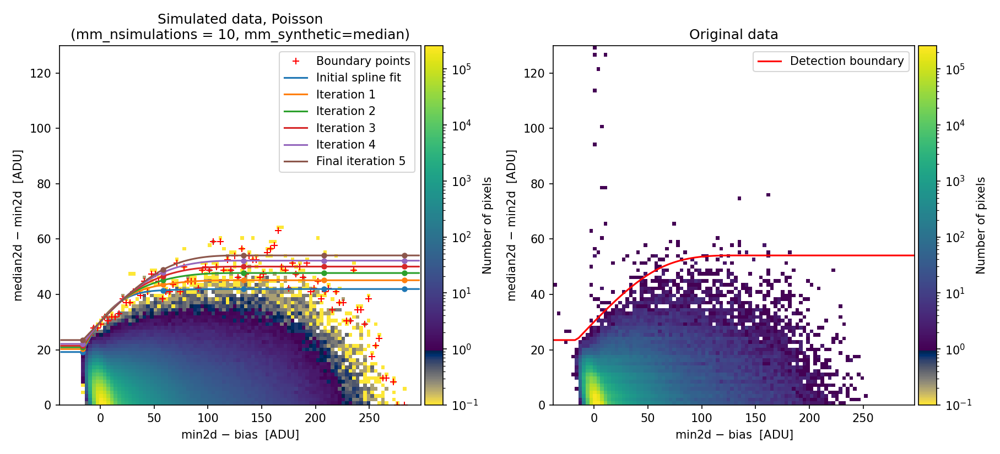
Fig. 1 2D histogram showing the simulated (left) and real (right) Median-Minimum diagnostic diagram.
The MM diagnostic diagram above is a 2D histogram where color indicates the number of pixels within each bin, as shown by the colorbar. This histogram is displayed twice:
Left Panel: Results from a predefined number of simulations (
mm_nsimulations: 10in this example). In each simulation, the program uses the originalmedian2dimage to generate 3 synthetic exposures based on the provided gain, readout noise, and bias values.Right Panel: The same diagnostic diagram using actual data from the individual exposures.
Looking at the left panel of Fig. 1,
for each bin along the horizontal axis, the corresponding 1D histogram in the
vertical direction is converted to a cumulative distribution function (CDF).
The red crosses mark the median2d - min2d values where the probability of
finding a pixel above that value is low enough that only one such pixel is
expected. An initial spline constrained to positive derivatives (blue curve) is
fitted through these red crosses.
To define a more conservative detection boundary, the blue curve is extended upward (orange, green, and red curves) by repeating the fit for a few iterations, applying increasing weights to points located above the original fit. The final curve serves as an upper boundary for the expected location of pixel values in this MM diagnostic diagram.
This detection boundary is also plotted in the right panel of
Fig. 1, where the 2D histogram
corresponds to the min2d - bias and median2d - min2d values from the actual
data. If the three individual exposures are truly equivalent, the MM diagnostic
diagram on the right should closely resemble the diagram on the left. Pixels
appearing above the calculated boundary in the right panel exhibit very large
median2d - min2d values, exceeding expectations based on image noise, and are
flagged as cosmic-ray pixels by the \(\color{blue}\textbf{M.M.Cosmic}\) method.
After pressing the c key, the program resumes execution. Press the x key to
halt execution completely if you need to modify any input parameters in the
YAML file. As shown in Example 2, you can also modify the detection boundary
fit interactively by pressing the r (replot) key.
Since we are using crmethod: mm_pycosmic, the program proceeds to combine the
detections made by both the \(\color{red}\textbf{Aux.Cosmic}\)
(\(\color{BrickRed}\textbf{PyCosmic}\) in this case) and
\(\color{blue}\textbf{M.M.Cosmic}\) methods. This allows detailed analysis of how
many pixels were flagged by one method but not the other, and how many were
identified by both.
At this point, the code generates the following figure displaying detailed MM
diagrams and the locations of suspicious cosmic ray pixels.
Since interactive: True is defined in the input parameter YAML file, you can
examine the different panels in detail (e.g., zoom, pan) using the Matplotlib
widgets. This figure is also saved as diagnostic_mediancr.png.
{kind=link}
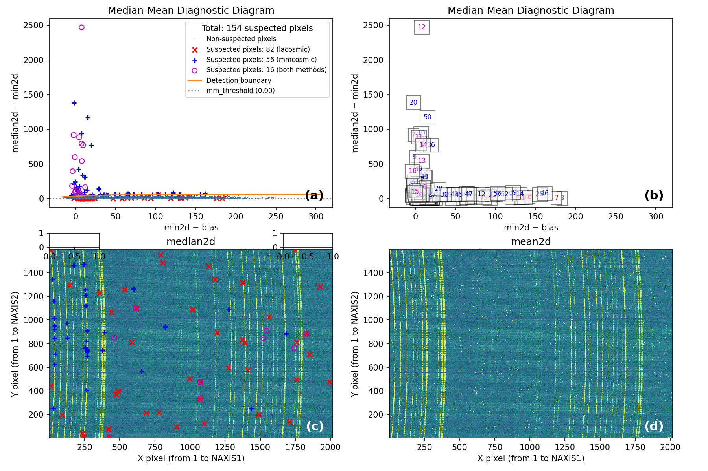
Fig. 2 Panel (a): MM diagnostic diagram showing pixels detected only by
\(\color{red}\textbf{Aux.Cosmic}\) (red x’s), only by
\(\color{blue}\textbf{M.M.Cosmic}\) (blue +’s), and by both methods (open magenta
circles). Panel (b): The same diagram with sequential numbers assigned to
each suspected pixel instead of symbols. Numbers follow the same color coding
as symbols in Panel (a). Panel (c): The median2d image with suspected
pixel locations overlaid using the same symbols and colors as Panel (a).
Panel (d): The mean2d image. The user can press keys 1, 2, and 3 to
cycle through individual exposures; press 0 to return to the mean2d image.
Zoom applied in Panel (a) propagates to Panel (b), while Panel (c) displays
only suspected pixels within the zoomed region of Panel (a). Panels (c) and (d)
update simultaneously when zoom is modified in either panel. This interactive
figure allows close examination of pixels suspected of cosmic ray contamination
in two of the three exposures and helps assess how the two detection methods
(\(\color{red}\textbf{Aux.Cosmic}\) and \(\color{blue}\textbf{M.M.Cosmic}\))
performed in identifying suspected pixels. Note that zooming and panning can be
slow when the number of cosmic ray pixels is high.
Note that the MM diagram in the right panel of of Fig. 1 is not identical to panels (a) and (b) of Fig. 2 because the former is a 2D histogram displaying binned cosmic ray pixel counts, whereas the latter display each cosmic ray pixel individually.
Pressing the ? key displays a help message in the terminal showing available
actions.
{kind=link}
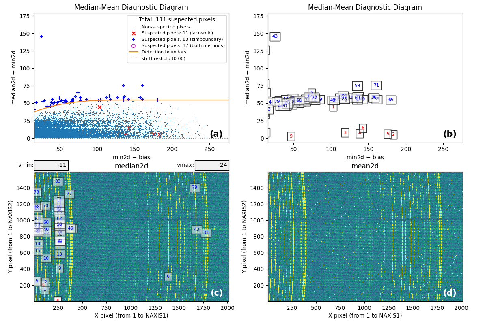
Fig. 3 By zooming into panel (a) of Fig. 2, you can better visualize what is happening near the detection boundary in the MM diagnostic diagram. Panel (c) then displays only the suspected pixels within the zoomed region of panel (a). As shown, many pixels detected above the detection boundary appear along sky lines, suggesting they are likely false positives. Note that panel (c) now displays suspected pixels using the same numbering as panel (b).
Note that this figure shows many cosmic ray pixels detected by
\(\color{blue}\textbf{M.M.Cosmic}\) below the detection boundary. This occurs
because mm_dilation: 1 is used in the input parameter YAML file. This means
the locations of cosmic ray pixels initially detected by this method (those
above the detection boundary) are extended using the specified dilation factor,
which includes pixels below the detection boundary.
On the other hand, in this case the \(\color{blue}\textbf{M.M.Cosmic}\) algorithm has detected many false positives at the locations of some bright sky lines. These are easily identified as pixels above the detection boundary for \(({\rm min2d} - {\rm bias}) \lesssim 10\;{\rm e}^{-}\) in the MM diagram.
Note
Even though the detection boundary is slightly underestimated and the program will detect a non-negligible number of false positives, this example is illustrative for understanding the different steps carried out once the detection boundary has been determined (a more refined detection boundary will be employed in Example 2 below).
We proceed with numina-crmasks execution by pressing the c key again.
From this point onward, the program continues without interruption.
The program groups connected pixels into cosmic ray features, each representing an individual cosmic ray hit affecting contiguous pixels. Each feature can contain pixels detected by either \(\color{red}\textbf{Aux.Cosmic}\) or \(\color{blue}\textbf{M.M.Cosmic}\). To assess the reliability of these methods in detecting actual cosmic ray hits, features are classified into 4 categories:
4: The feature contains at least one pixel detected by both \(\color{red}\textbf{Aux.Cosmic}\) and \(\color{blue}\textbf{M.M.Cosmic}\)
3: The feature contains only pixels detected by \(\color{red}\textbf{Aux.Cosmic}\)
2: The feature contains only pixels detected by \(\color{blue}\textbf{M.M.Cosmic}\)
other: The feature is not included in categories 2, 3, or 4
Note: Category 1 is not used because this flag identifies pixels added to
features by applying a global dilation factor (the dilation key in the input
parameter YAML file). For this example, dilation: 0. This global dilation
factor is independent of mm_dilation, which applies only to cosmic ray pixels
detected exclusively by the \(\color{blue}\textbf{M.M.Cosmic}\) method.
After this classification, numina-crmasks saves a CSV file and a PDF file
for each category. The CSV file contains the list of pixels assigned to each
feature. The PDF file is described below. The basenames of these files are
mediancr_identified_any4, mediancr_identified_only3,
mediancr_identified_only2, and mediancr_identified_other for categories 4,
3, 2, and other, respectively.
Note that each cosmic ray feature receives a unique number independent of category, i.e., the same number does not appear in different categories.
For each identified cosmic ray feature, the program generates two pages in the
output PDF files. The corresponding plots are not displayed interactively
(unless verify_cr: True in the input YAML file), so users should open these
files manually after the program finishes execution.
{kind=link}
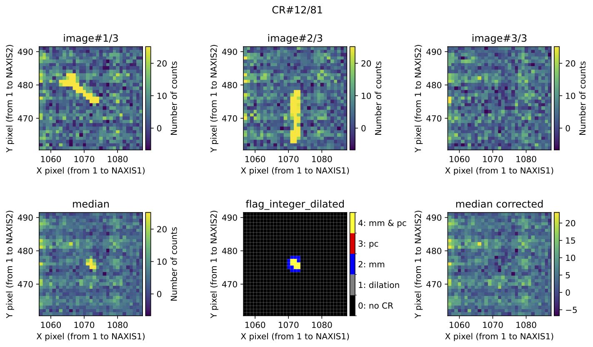
Fig. 4 Example of CR feature included in the file mediancr_identified_any4.pdf. In
this figure the plots are organized into two rows. The top row displays the 3
individual exposures. The left panel of the bottom row shows the initial
median2d combination of the 3 exposures. The central panel of the bottom
row displays the detection information, where each detected pixel is coloured
according to the detection method: red when detected only by
\(\color{red}\textbf{Aux.Cosmic}\); blue when detected only by
\(\color{blue}\textbf{M.M.Cosmic}\); yellow when detected by both
\(\color{red}\textbf{Aux.Cosmic}\) and \(\color{blue}\textbf{M.M.Cosmic}\); gray
for pixels included after applying a global dilation process (none in this
example). The right panel of the bottom row shows the result of replacing the
masked pixels in median2d by their value in min2d.
{kind=link}
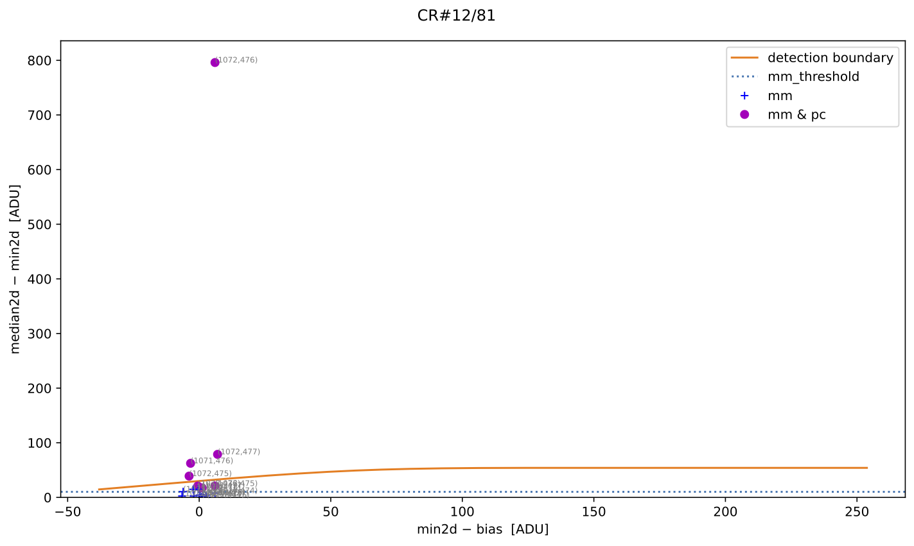
Fig. 5 MM diagnostic diagram for the cosmic ray feature shown in the previous figure. The location of each pixel constituting the feature is plotted, with different symbols indicating how each pixel was detected, as described in the legend. Pixel coordinates (following the FITS convention) are also shown.
A similar example of a cosmic ray feature saved in
mediancr_identified_only3.pdf (in this example, all but one feature are false
positives):
{kind=link}
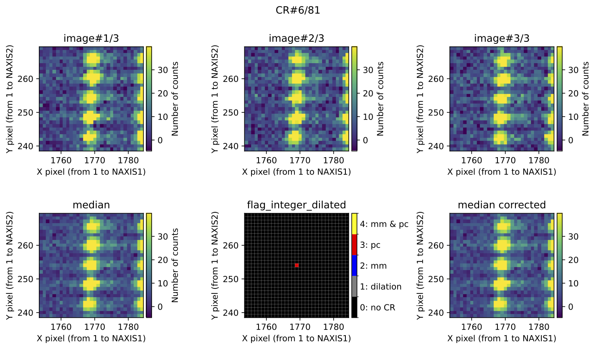
{kind=link}
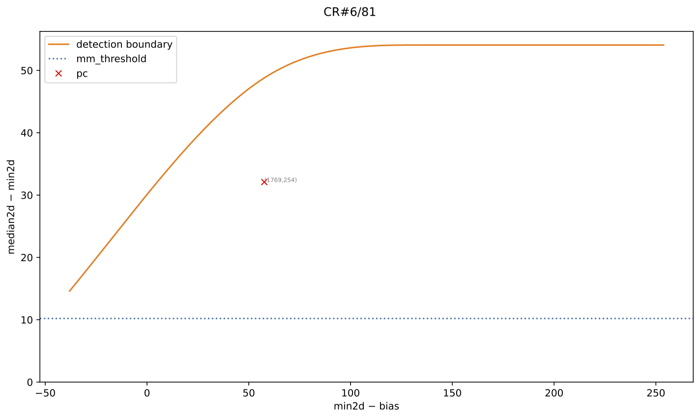
A similar example of a cosmic ray feature saved in
mediancr_identified_only2.pdf (in this example, all are false positives):
{kind=link}
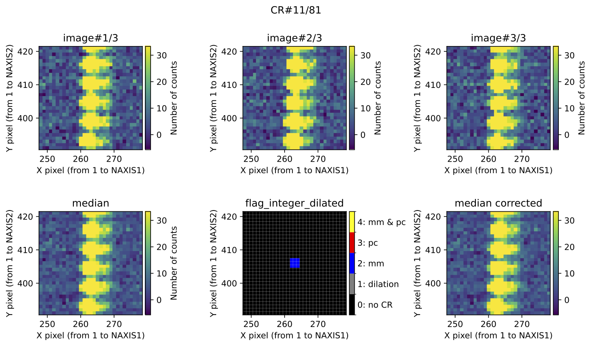
{kind=link}
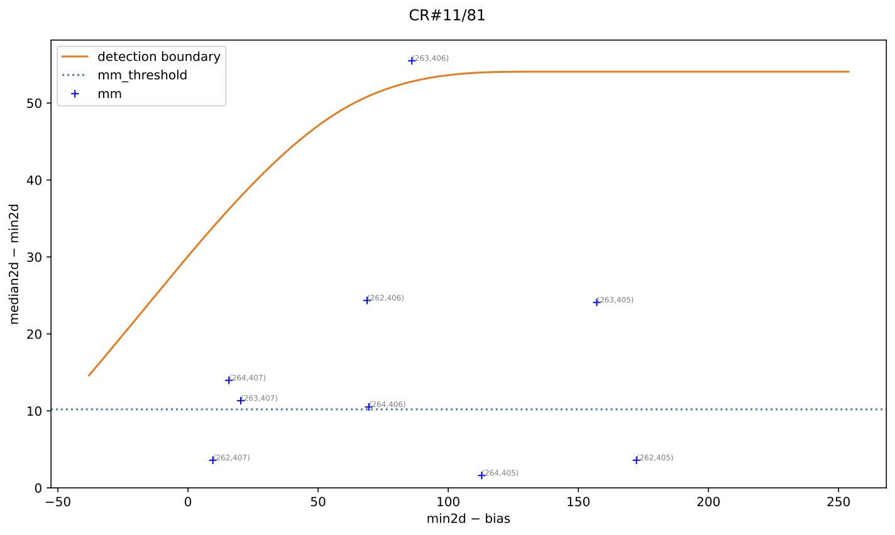
A similar example of a cosmic ray feature saved in
mediancr_identified_other.pdf (in this example, only one feature, which is a
false positive):
{kind=link}
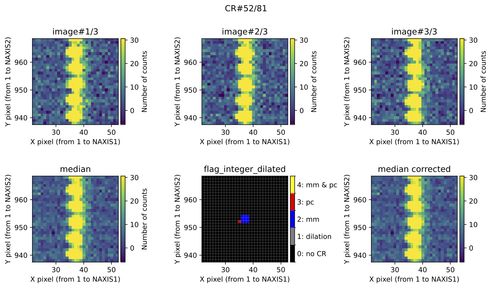
{kind=link}
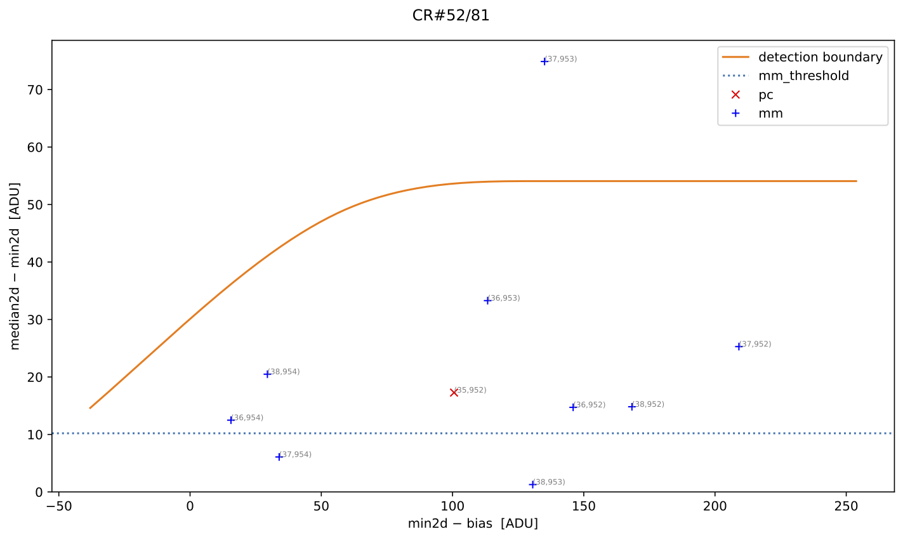
The pixels of all the CR features detected in the median image (independently
of the CR category) are stored in the \(\color{magenta}\texttt{MEDIANCR}\)
extension of the crmasks.fits file with a value of 1.
Next, the program generates the mean2d image containing the average of all
individual exposures and attempts to identify cosmic rays in this image. Note
that the number of cosmic rays will be very large, as it includes all cosmic
rays from all individual exposures. This procedure begins with the
\(\color{red}\textbf{Aux.Cosmic}\) method, using in this case the same
\(\color{BrickRed}\textbf{PyCosmic}\) parameters employed above, and continues
with the \(\color{blue}\textbf{M.M.Cosmic}\) method. In this second case, an MM
diagnostic diagram is constructed using \(\texttt{mean2d} − \texttt{min2d}\) on
the vertical axis instead of \(\texttt{median2d} − \texttt{min2d}\). The same
previously derived detection boundary is also used. The figure showing
suspected pixel locations is not displayed interactively but is saved as
diagnostic_meancr.png.
The same process is then repeated for the individual exposures. In these cases,
the \(\color{blue}\textbf{M.M.Cosmic}\) diagnostic diagram is constructed using
\(\texttt{image#}i − \texttt{min2d}\) on the vertical axis, where \(\texttt{#}i\)
is the image number (1, 2, or 3). The same detection boundary calculated
initially is reused, and the figures showing cosmic ray-affected pixels are
not displayed interactively but are saved as diagnostic_crmaski.png, where
i is the image number.
All pixels suspected of cosmic ray contamination in each individual image are
stored with a value of 1 in the \(\color{magenta}\texttt{CRMASK}i\) extension of
the crmasks.fits file, where \(i\) is the image number.
The code generates a cleaned version of median2d that is used to search for
residual cosmic ray pixels in this combination.
All pixels suspected of cosmic ray contamination in the cleaned mean2d image
are stored with a value of 1 in the \(\color{magenta}\texttt{MEANCR}\) extension
of the crmasks.fits file.
Since a specific cosmic-ray pixel mask has been obtained for each individual
image, it is possible to investigate whether any pixels are masked in all
exposures. These problematic pixels require special treatment. The program
detects them, reports their count, and generates both a graphical
representation of each case (problematic_pixels.pdf) and a CSV table
(problematic_pixels.csv) containing the cosmic ray index, pixel coordinates
(following the FITS convention) for each cosmic ray case, and a mask value.
At this point, the program generates the crmasks.fits file, which stores the
different computed masks.
Note that the masks are stored in different extensions of this file.
Since \(\color{BrickRed}\textbf{PyCosmic}\) is used as the \(\color{red}\textbf{Aux.Cosmic}\) method, the cosmic-ray-cleaned image returned by the \(\color{gray}\texttt{cosmicray_lacosmic()}\) function is also saved in an extension named \(\color{magenta}\texttt{AUXCLEAN}\).
Finally, the program computes the combined images. First, the simple mean,
median, and minimum 2D images are created. These do not require any cosmic ray
masks and are generated so users can compare them with the cleaned combination
versions. The corresponding images are saved as combined_mean.fits,
combined_median.fits and combined_min.fits, respectively.
Then, the program uses the \(\color{magenta}\texttt{MEDIANCR}\) mask to obtain
the corrected median combination, replacing masked pixels with the minimum
value (or with the value stored in the \(\color{magenta}\texttt{AUXCLEAN}\)
extension if use_auxmedian: True is set). The corrected image is saved in
combined_mediancr.fits.
The first attempt to compute a corrected mean combination is performed on the
initial mean-combined image, where values indicated by the
\(\color{magenta}\texttt{MEANCRT}\) mask are replaced with those from the
corrected median image. This is important. The result is saved in
combined_meancrt.fits.
The program generates a second version of a combined image using the mean value
at each pixel, this time using the individual masks
\(\color{magenta}\texttt{CRMASK}i\) obtained for each exposure. The resulting
image is saved in combined_meancr.fits.
A third version of a mean combination is computed using the
\(\color{magenta}\texttt{MEANCR}\) mask to correct residual cosmic ray pixels in
the combined_meancr.fits image. The result is saved as
combined_meancr2.fits.
Upon successful completion, the program displays the total execution time and a farewell message:
Example 2: adjusting the detection boundary with spline fit
To obtain a detection boundary that reaches higher values in the MM diagnostic diagram and thus reduces false positive detections, we can perform a manually refined fit. For this purpose, we start the code execution as in Example 1.
(venv_numina) $ numina-crmasks params_example1.yaml --output_dir example2
Note that here we are reusing the same params_example1.yaml file although
the output files will be stored in the example2 subdirectory.
After some execution time, the program arrives to the point where the 2D diagnostic histograms are displayed:
Fig. 6 2D histogram showing the simulated (left) and real (right) Median-Minimum diagnostic diagram.
While the previous figure is displayed, we can repeat the boundary fit by
pressing the r key. The program then asks several questions about how the
boundary fit is performed (values shown in brackets are the current defaults;
pressing RETURN accepts the proposed value). We accept the default values for
the first questions:
Then we indicate our interest in including fixed points in the boundary fit. Specifically, we insert two fixed points at the following \((x,y)\) coordinates: \((50, 60)\) and \((150, 80)\).
Once the two fixed points have been introduced, the program recomputes and displays the new 2D diagnostic histograms:
{kind=link}
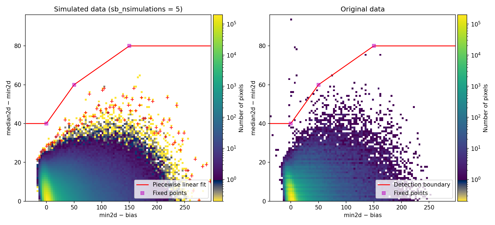
Fig. 7 Recomputed 2D histogram showing the simulated (left) and real (right) Median-Minimum diagnostic diagram. The data are the same as in Fig. 6, but the boundary fit has been forced to pass through two fixed points (displayed as filled magenta squares).
By pressing c the program resumes execution.
By shifting the detection boundary upward, the false detection rate decreases. Specifically, false detections on sky lines decrease drastically, as shown in panel (c) of the following figure:
{kind=link}
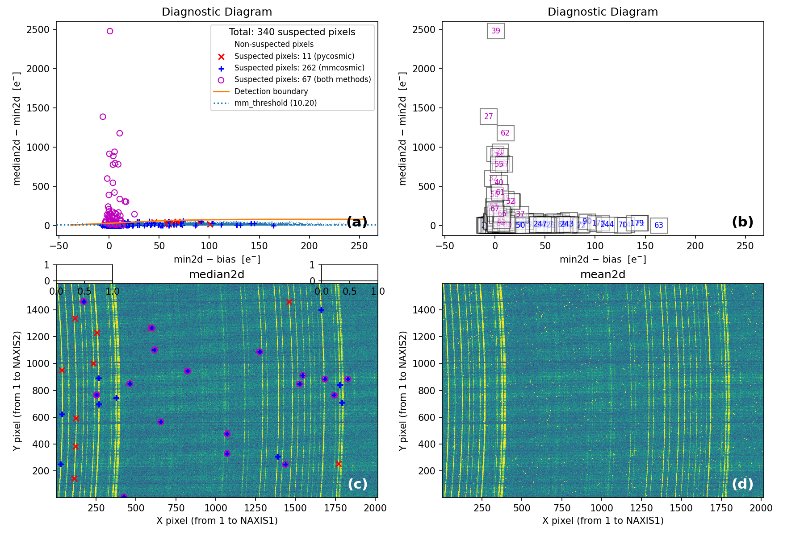
Fig. 8 MM diagnostic diagram and location of the detected cosmic-ray pixels. To be compared with Fig. 2.
From this point onward, the program continues execution as in Example 1.
Comparing the results obtained here with those obtained in Example 1, we can
see that with the refined detection boundary we have avoided one false positive
in mediancr_identified_any4.csv, and reduced the number of false positive
detections in mediancr_identified_only2.csv.
By adjusting the number and location of fixed points, users can obtain an even better detection boundary.
Once the optimal fixed points have been identified, it is possible to modify
the input parameter YAML file to automate code execution without user
interaction. To do this, change interactive: True to interactive: False (to
prevent the program from stopping at intermediate steps) and insert the
fixed point coordinates by modifying
to
(here we insert the same two fixed points used previously; the default weight 10000 are assumed by default).
The modified YAML file params_example2.yaml contains these changes. We can
execute numina-crmasks with this modified YAML file, storing the results in
a subdirectory example2b:
(venv_numina) $ numina-crmasks params_example2.yaml --output_dir example2b
The results saved in subdirectories example2 and example2b are identical.
Example 3: adjusting the detection boundary with piecewise fit
An alternative to using a spline fit to determine the detection boundary is to use a piecewise fit through a list of fixed points. Users can modify the fit type (spline or piecewise) when running the code interactively, just after the 2D diagnostic histogram is displayed.
Another option is to define mm_boundary_fit: piecewise in the input YAML file
and specify the desired number of fixed points. For example:
These changes have been introduced in params_example3.yaml. You can execute:
(venv_numina) $ numina-crmasks params_example3.yaml --output_dir example3
{kind=link}
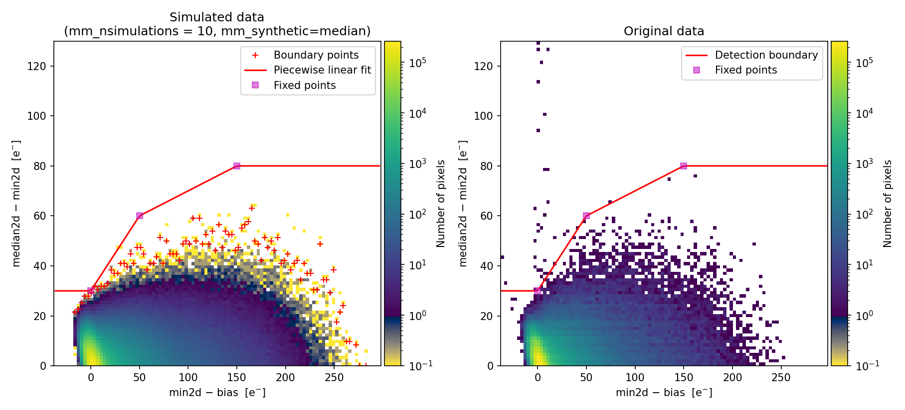
Fig. 9 MM diagnostic diagram and location of detected cosmic-ray pixels. Compare with Fig. 7.
Since this detection boundary is not very different from the one determined in
Example 2, the resulting cosmic ray masks are very similar. In fact,
mediancr_identified_any4.csv and mediancr_identified_only3.csv are
identical, and only mediancr_identified_only2.csv differs by 1 cosmic ray
feature.
Example 4: simulated MM diagram based on individual exposures
In all previous examples, we have used mm_synthetic: median in the input YAML
file. This means the simulated 2D MM diagnostic histogram is built using data
in the median image to define the expected number of counts in every pixel for
all exposures. However, this is not always a good approximation because
individual exposures are not necessarily equivalent. For instance, in IFU
observations, seeing variations can produce significant flux variations of
astronomical sources among different fibers in consecutive exposures, while sky
emission line fluxes may remain unaffected. This means simple re-scaling of
fiber signals is not possible. Additionally, small shifts between individual
exposures may occur due to instrument flexures.
When these kinds of problems are present in the data, a better approach to
generate the simulated 2D diagnostic histogram is to use a better model for
the signal in each individual exposure. We have implemented this in
numina-crmasks by obtaining a pre-cleaned version of each individual
exposure using the chosen \(\color{red}\textbf{Aux.Cosmic}\) algorithm and using
these to generate simulated exposure sets. To use this approach, define
mm_synthetic: single in the input YAML file.
You can test this approach using params_example4.yaml, which is identical to
params_example1.yaml except for the parameter mm_synthetic, which now is
set to single instead of median:
(venv_numina) $ numina-crmasks params_example4.yaml --output_dir example4
{kind=link}
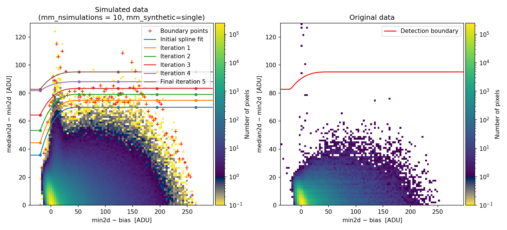
Fig. 10 2D histogram showing the simulated (left) and real (right) Median-Minimum diagnostic diagram. Compare with Fig. 1.
The new simulated 2D diagnostic diagram covers a more extended region of the MM diagram, and the corresponding detection boundary is shifted toward higher \({\rm median2d} - {\rm min2d}\) values, which is less prone to false positive detections.
On the other hand, this new approach may skip some pixels actually affected by
cosmic rays. When running numina-crmasks interactively, users can obtain a
simulated 2D diagnostic diagram closer to the diagram from actual data. To do
this, remove relatively isolated bins in the simulated histogram by performing
a refined fit (press the r key while the 2D diagnostic histogram is
displayed) and specifying the number of neighbors when answering the following
question:
By entering an integer larger than zero (maximum 8), the program recomputes the 2D diagnostic histogram and removes any bin whose number of neighbors with nonzero values is less than the specified value.
Additionally, we can modify other fit parameters. For example, we can modify the number of knots and the number of iterations for boundary extension:
{kind=link}
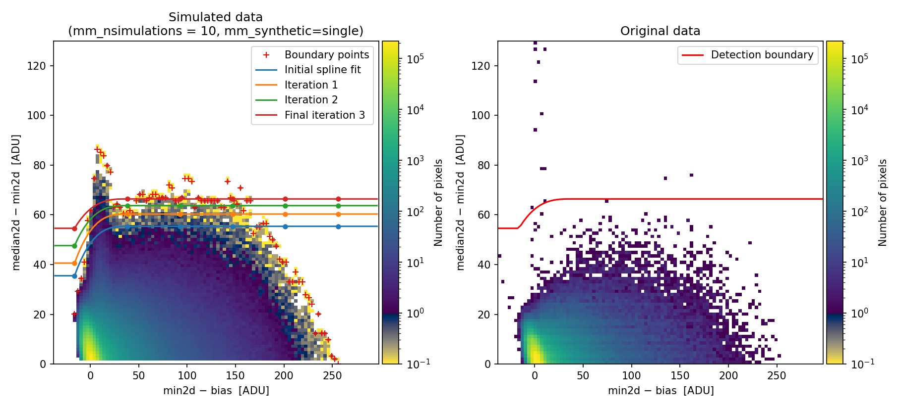
Fig. 11 2D histogram showing the simulated (left) and real (right) Median-Minimum diagnostic diagram. Compare with Fig. 10.
{kind=link}
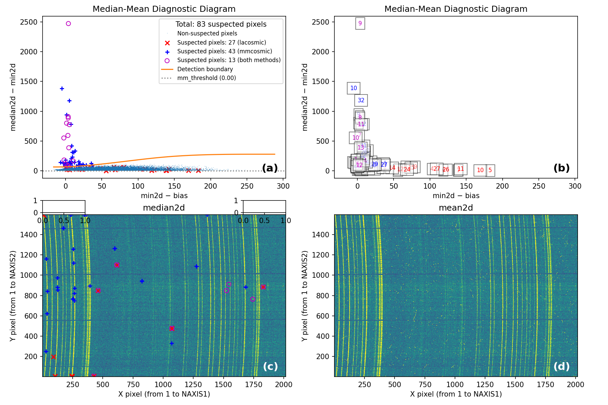
Fig. 12 MM diagnostic diagram and location of the detected cosmic-ray pixels.
From this point onward, the program can be used as in Example 1.
Note that it is possible to insert the refined parameters in the input YAML file. In particular:
Example 5: adjusting the flux level
Warning
This example illustrates a procedure used before the mm_synthetic: single
option was included. For the reasons discussed in Example 4, it seems unlikely
that different initially equivalent exposures would differ by a simple
multiplicative factor, which is the case analyzed in Example 5. We expect the
procedure described in Example 4 to be more general. Nevertheless, we have kept
the documentation of Example 5 to provide an alternative procedure that may be
useful in some cases.
In some circumstances, small flux variations may occur among different exposures. This causes a straightforward execution of numina-crmasks to produce a simulated diagnostic diagram that does not match the one obtained from the individual exposures. To illustrate this issue, this example again uses three individual exposures, but here the signal in the three images corresponds to simulated images built from the median of the three exposures used in previous examples, to which individual cosmic rays detected in the single exposures have been added. Additionally, the signal of the first simulated image has been artificially decreased by 20%, while the third exposure has been increased by 20%.
(venv_numina) $ numina-crmasks params_example5a.yaml --output_dir example5a

Fig. 13 Simulated (left) and real (right) Median-Minimum diagnostic diagram. In this case, there is a clear difference between the simulated and the real data.
Since the detection boundary is underestimated, the number of false positives on sky lines increases dramatically, as shown in panel (c) of the following figure:
{kind=link}
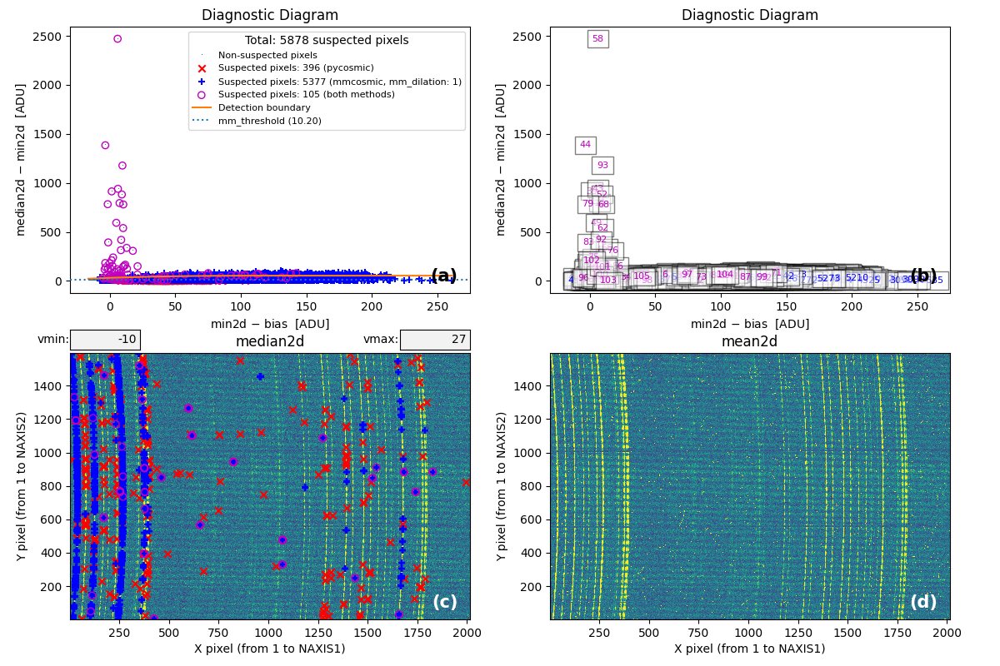
Fig. 14 MM diagnostic diagram and location of the detected cosmic-ray pixels. Note the large number of false detections on the sky lines.
The numina-crmasks program includes the option to determine multiplicative factors for rescaling individual exposures to minimize this problem. The procedure does not guarantee optimal results but can help reveal the presence of this issue. Users may also explicitly provide the multiplicative factors after calculating them beforehand.
In the following steps, we attempt to automatically estimate these factors by specifying the following information in the parameter file:
24 flux_factor: auto # none | auto | [list of values]
25 flux_factor_regions: # list of regions, FITS criterium
26 # - [xmin, xmax, ymin, ymax] # <-- format (no need to uncomment this)
27 - [229, 274, 1, 1596]
28 apply_flux_factor_to: simulated # original | simulated (data)
Note that the flux_factor parameter has been changed from none to auto.
This instructs numina-crmasks to check for a multiplicative factor between
the individual exposures and the median image before generating the diagnostic
diagram.
If nothing else is changed in the parameter file, the code uses information
from the entire image. However, in this example, large detector regions have
very little signal, so selecting rectangular regions containing pixels with
significant signal is advisable. In this case, a single region is selected that
includes the sky emission lines. The coordinates of this rectangle are
specified under the flux_factor_regions parameter.
The additional parameter apply_flux_factor_to allows choosing whether the
calculated multiplicative factors should be applied to the simulated images
(generating individual exposures that preserve signal differences between them)
or to the original images (rescaling them so the exposures have similar signal
levels). In this example, we choose the first option.
(venv_numina) $ numina-crmasks params_example5b.yaml --output_dir example5b
Before generating the diagnostic diagram, numina-crmasks displays a figure showing the median combination (left panel) and the image number used to compute the median at each pixel (right panel).
{kind=link}
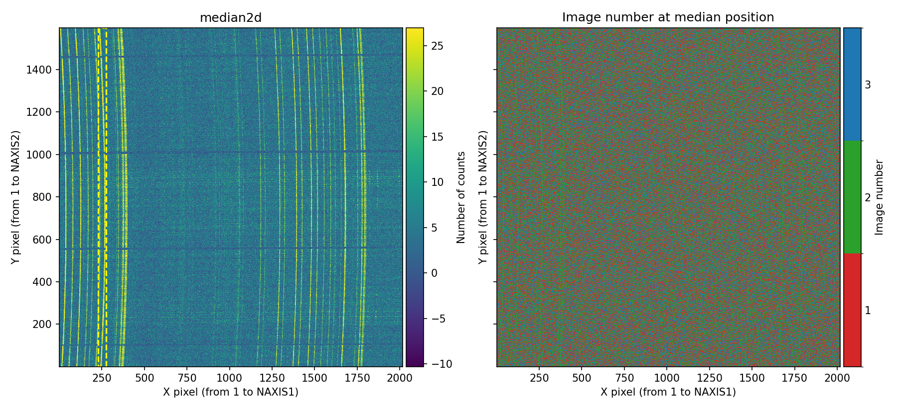
Fig. 15 Left panel: median combination. Right panel: image number used to compute the median at each pixel. Since in this example the signal of the first and third exposures has been decreased and increased, respectively, the pixels with the strongest signal (sky lines) are mostly shown in the right panel with the color corresponding to the second individual image. Users can interactively zoom in on either panel, and the same zoom level is automatically applied to the adjacent panel.
Examining the previous figure clearly reveals signal discrepancies among the individual exposures.
Next, numina-crmasks attempts to determine a multiplicative flux factor between each individual exposure and the median image.
{kind=link}
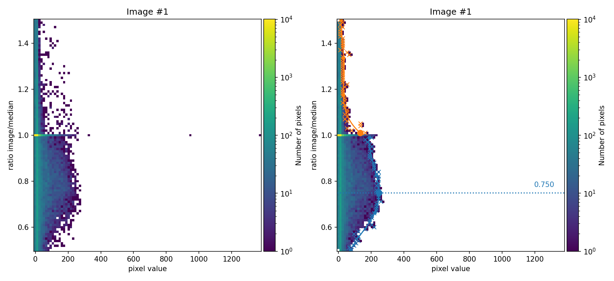
{kind=link}
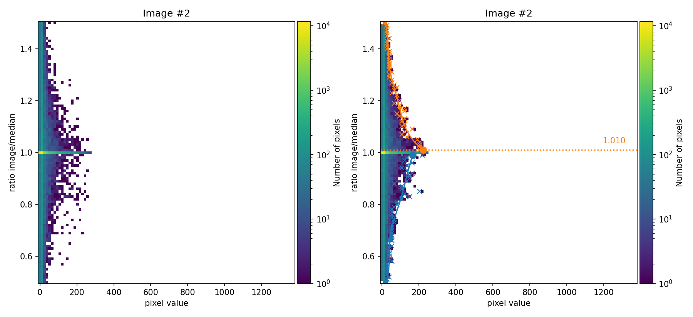
{kind=link}
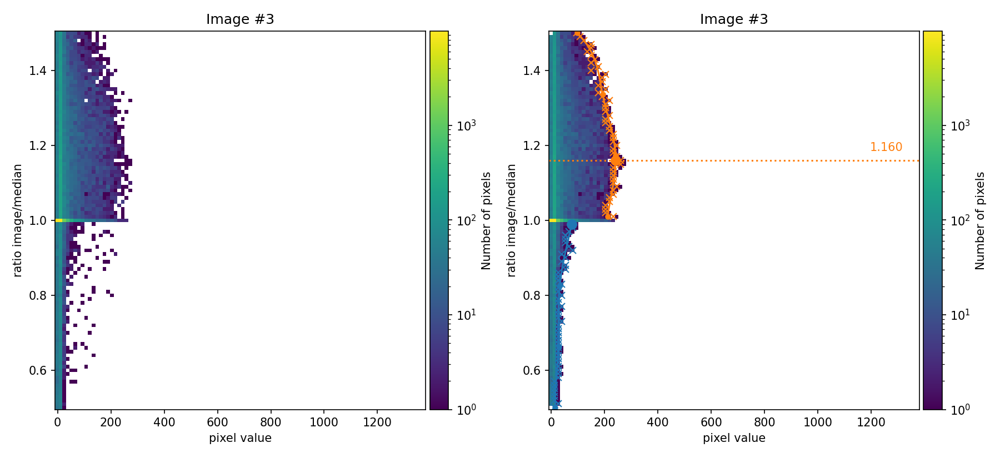
In the figures above, the ratio between the signal in each individual image and the median image is compared as a function of the signal in the image. These figures are 2D histograms; after removing isolated bins (left panels), a fit is performed to determine a multiplicative factor for each individual exposure (right panels).
Users can choose to proceed using these automatically determined factors or
rerun the program by explicitly setting the desired factors in the
flux_factor parameter. In the latter case, the factors are provided as a
list, for example: flux_factor: [0.75, 1.01, 1.16].
In this example, the factors automatically calculated by numina-crmasks do
not exactly match the factors used to generate the input images (those factors
were 0.80, 1.00, and 1.20). Since we are using apply_flux_factor_to: simulated as an input parameter, the discrepancy is not very problematic
because the goal is to obtain an appropriate detection boundary, and the
multiplicative factors are used only for that task. If instead
apply_flux_factor_to: original were used, a more accurate determination of
those multiplicative factors would be advisable.
Continuing program execution after the automatic estimation of the multiplicative factors, the code displays the resulting diagnostic diagram and the estimated detection boundary.
{kind=link}
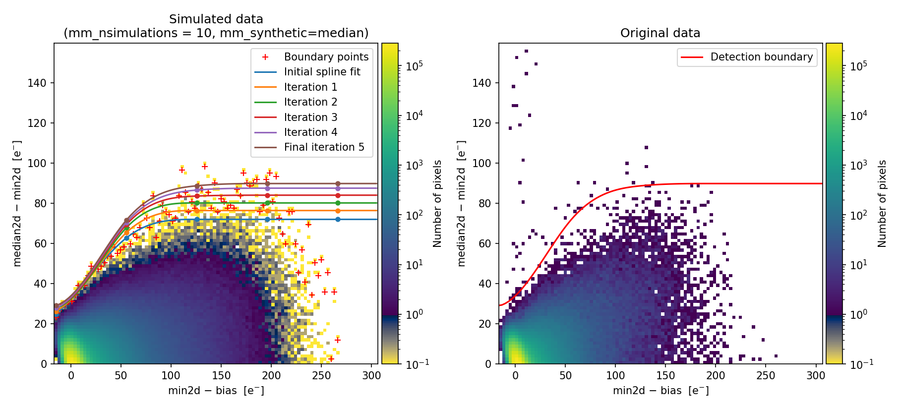
Fig. 16 Simulated (left) and real (right) 2D diagnostic histogram. This diagram has been generated using the multiplicative factors computed by numina-crmasks. This time, the simulated data show a distribution much more similar to the original data, and the calculated detection boundary is better defined. Compare this figure with Fig. 13.
{kind=link}
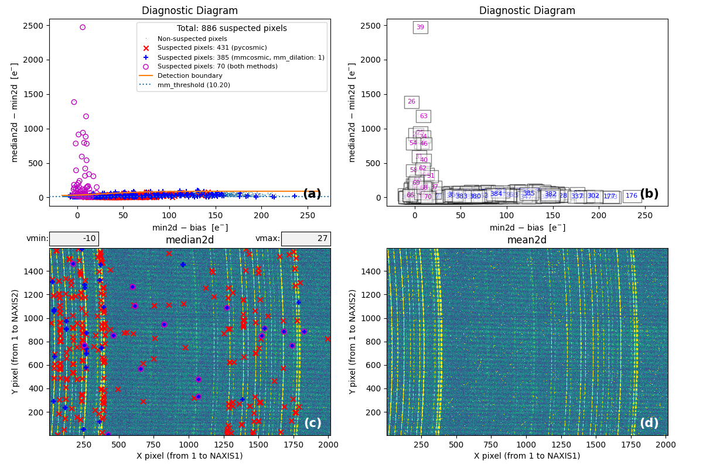
Fig. 17 MM diagnostic diagram and location of detected cosmic-ray pixels. Compare this figure with Fig. 14. Note that although we have significantly reduced the number of false detections by \(\color{blue}\textbf{M.M.Cosmic}\color{black},\) this number is still high for the \(\color{red}\textbf{Aux.Cosmic}\) algorithm. In this case, it would be necessary to adjust the corresponding parameters in the input YAML file to avoid this problem (this has not been done in this example).
From this point onward, the program can be used as in Example 1.
Example 6: taking care of small image offsets
Warning
This example illustrates a procedure to account for small offsets between
different individual exposures. This solution was used before the
mm_synthetic: single option was included. We expect the procedure described
in Example 4 to be more general. Nevertheless, we have kept the documentation
of Example 6 to provide an alternative procedure that may be useful in some
cases.
Another situation that may occur is that individual exposures show small shifts, on the order of a fraction of a pixel in X or Y. Note that offsets larger than 1 pixel can always be reduced to values smaller than one pixel by applying an integer translation and leaving the fractional part as a residual.
In this example, we use as input a set of individual images that are slightly shifted. Specifically, we kept the second image fixed and shifted the first image by \((\delta x, \delta y) = (-0.5, +0.5)\) pixels, while the offsets applied to the third exposure were \((\delta x, \delta y) = (+0.5, -0.25)\) pixels.
We start by running numina-crmasks while ignoring the possibility that offsets may exist among the three individual exposures.
(venv_numina) $ numina-crmasks params_example6a.yaml --output_dir example6a
In this case, we again encounter a simulated 2D diagnostic histogram that fails to reproduce what is observed in the individual exposures.
{kind=link}
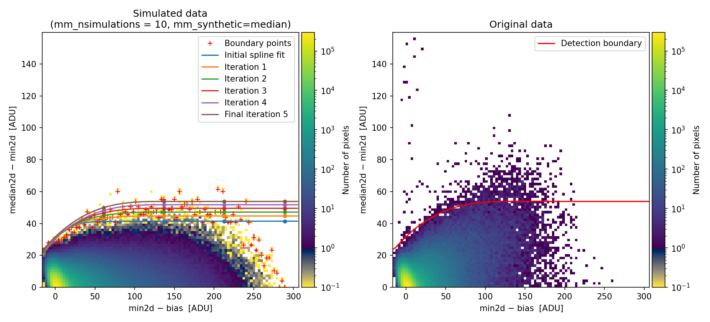
Fig. 18 Simulated (left) and real (right) Median-Minimum diagnostic histogram. There is a clear difference between the simulated and the real data.
Since the detection boundary is underestimated, the number of false positives on sky lines increases dramatically, as shown in panel (c) of the following figure:
{kind=link}
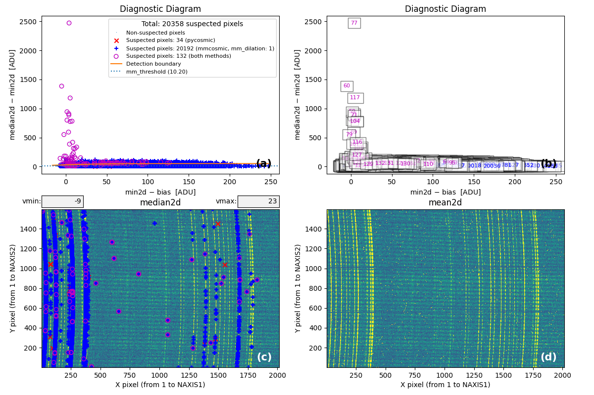
Fig. 19 MM diagnostic diagram and location of detected cosmic-ray pixels. Note the large number of false detections on sky lines.
To handle this situation, the numina-crmasks program includes the option to determine offsets between individual exposures using 2D cross-correlation. The procedure does not guarantee optimal results but can help reveal the presence of this issue. Users may also explicitly provide the desired offsets after calculating them beforehand.
In the following steps, we attempt to automatically determine these offsets by specifying the following information in the parameter file:
Note that the mm_crosscorr_region parameter has been changed from null to a
rectangular region to be used in the cross-correlation procedure. This
instructs numina-crmasks to check for offsets between each individual
exposure and the median combination before generating the diagnostic diagram.
(venv_numina) $ numina-crmasks params_example6b.yaml --output_dir example6b
In this example, we use a rectangular region of the image that contains bright sky lines. The offsets found for the three exposures \((\delta x, \delta y)=(-0.46, 0.41)\), \((0.00, -0.01)\), and \((0.48, -0.26)\) for exposures 1, 2, and 3, respectively, agree well (within \(\sim 0.1\) pix) with the offsets introduced when simulating the individual exposures: \((\delta x, \delta y)=(-0.50, 0.50)\), \((0.00, 0.00)\), and \((0.50, -0.25)\). Remember that these offsets indicate how much the median image must be shifted in \((x,y)\) for the shifted image to coincide with the individual exposures.
{kind=link}
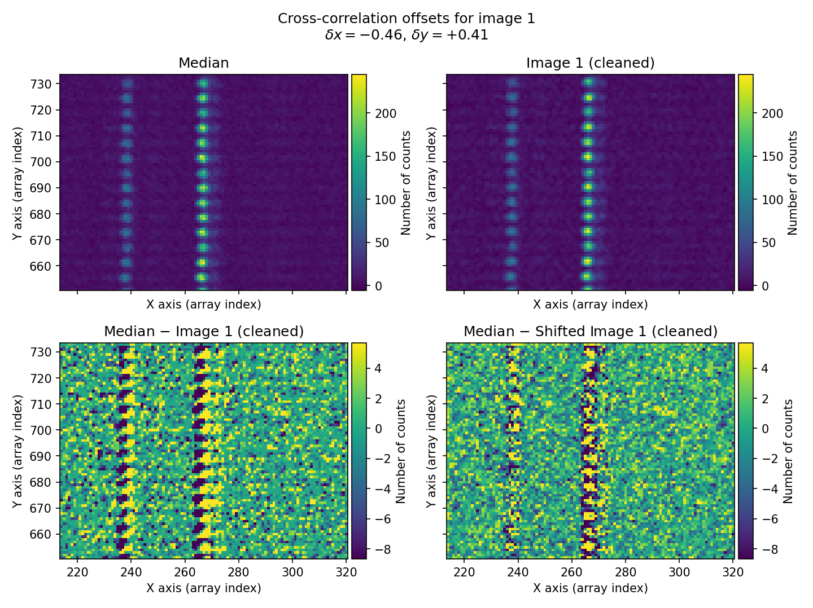
Fig. 20 For each individual exposure, the program displays a four-panel figure. In the top row, we have the median combination (left panel) and the corresponding individual image (right panel). In the bottom row, we see the difference between both images (left panel) and the same result after the individual image has been shifted by the calculated \((\delta x, \delta y)\) offsets using 2D cross-correlation (right panel). In this case, the first individual exposure is shown. The offset between the median and that exposure is clearly visible (bottom-left panel), and after applying the calculated offset, the difference between the median and the shifted individual image becomes much more consistent with proper alignment.
{kind=link}
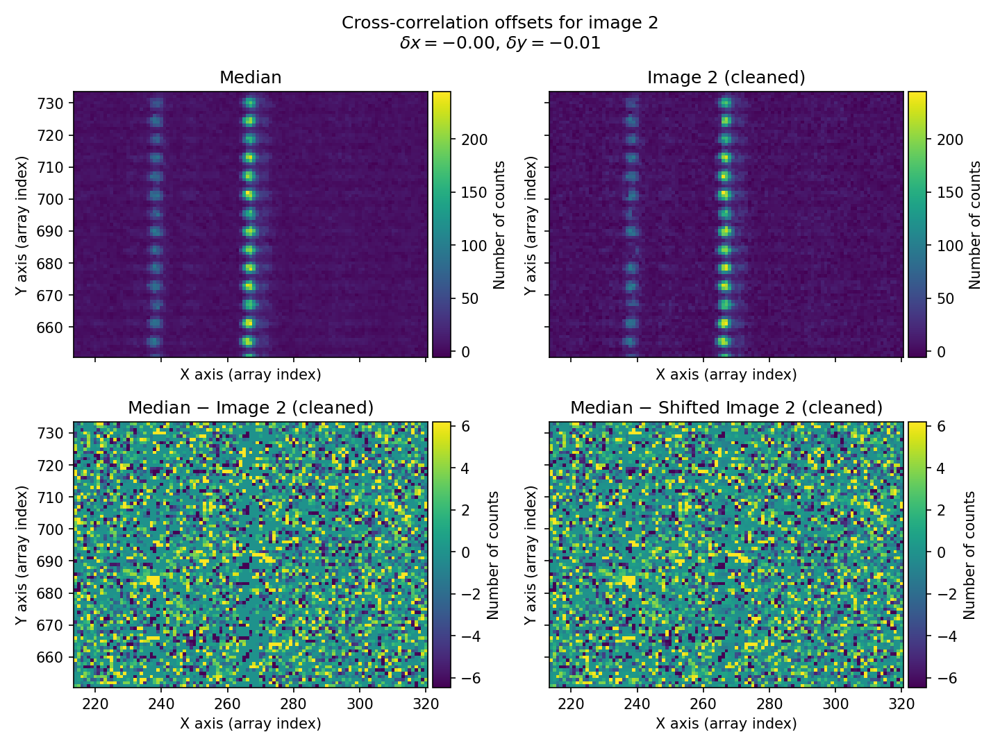
Fig. 21 Figure similar to Fig. 20 for the second individual exposure.
{kind=link}
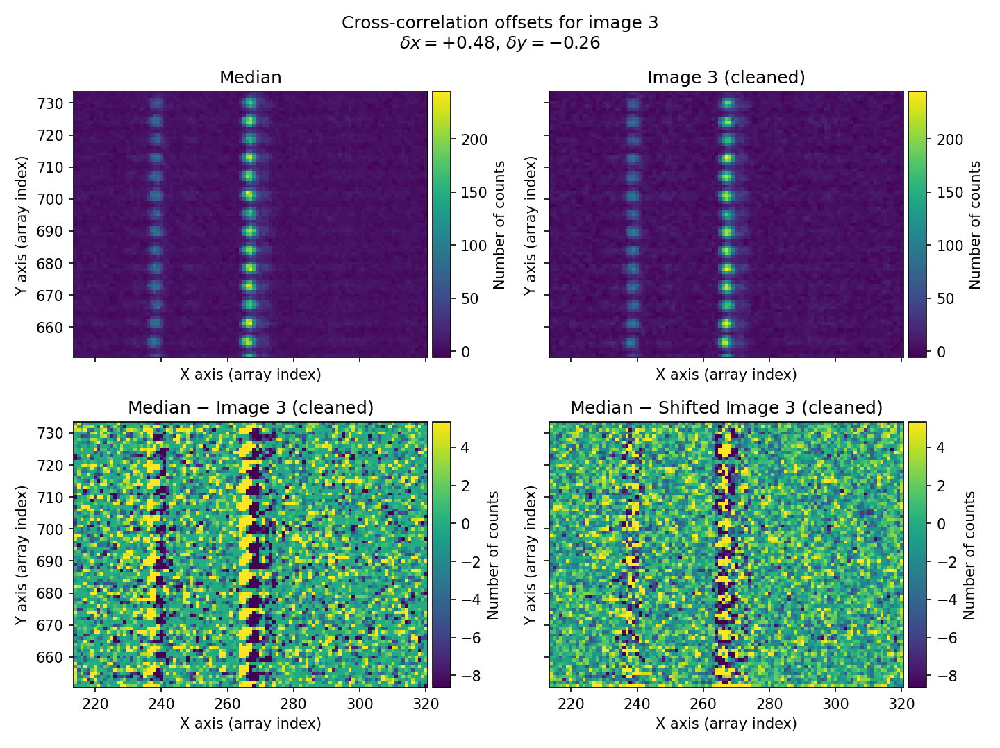
Fig. 22 Figure similar to Fig. 20 for the third individual exposure.
When generating the 2D diagnostic histogram, numina-crmasks applies the calculated offsets to the median image to simulate three exposures with the same relative displacements as the original three exposures.
{kind=link}
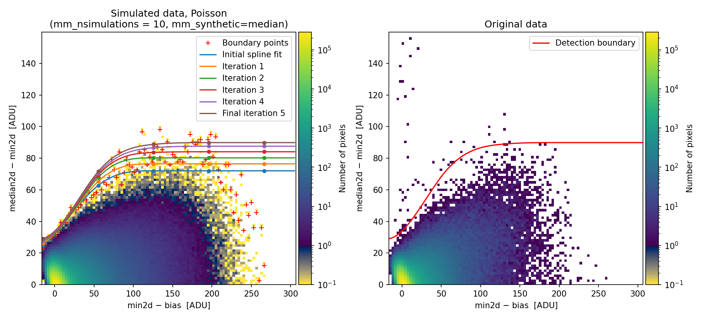
Fig. 23 Simulated (left) and real (right) Median-Minimum diagnostic histogram. This diagram has been generated using the \((\delta x, \delta y)\) offsets between exposures computed by numina-crmasks. This time, the simulated data show a distribution much more similar to the original data, and the calculated detection boundary is better defined. Compare this figure with Fig. 18.
The newly calculated detection boundary performs much better, removing the large number of false detections that occur when offsets between exposures are not accounted for.
{kind=link}
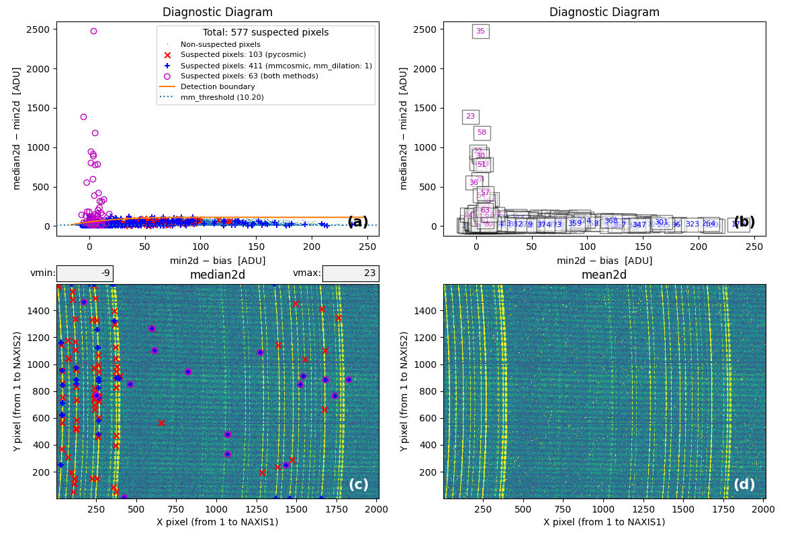
Fig. 24 MM diagnostic diagram and location of detected cosmic-ray pixels. Compare this figure with Fig. 19.
From this point onward, the program can be used as in Example 1.
If users obtain incorrect values when applying the cross-correlation technique
but have another way to estimate the offsets between individual exposures,
those values can be entered explicitly under the mm_xy_offsets parameter. In
this case, each \((\delta x, \delta y)\) offset pair must be provided on a
separate line for each individual exposure. For example, to reproduce the same
results obtained in this example, one should employ the following parameters in
the input YAML file:
Parameters in the requirements section
This section describes the parameters found in the requirements section of the YAML file used to run numina-crmasks.
General parameters
These parameters determine the overall execution of numina-crmasks:
crmethod(string): this parameter must take one of the following values:\(\color{green}\texttt{lacosmic}\): The \(\color{BrickRed}\textbf{L.A.Cosmic}\) technique [van Dokkum, 2001].
\(\color{green}\texttt{pycosmic}\): The \(\color{BrickRed}\textbf{PyCosmic}\) algorithm [Husemann et al., 2012].
\(\color{green}\texttt{deepcr}\): The \(\color{BrickRed}\textbf{deepCR}\) algorithm [Zhang and Bloom, 2020].
\(\color{green}\texttt{conn}\): The \(\color{BrickRed}\textbf{CoNN}\) algorithm [Xu et al., 2023].
\(\color{green}\texttt{mmcosmic}\): The \(\color{blue}\textbf{M.M.Cosmic}\) technique [Cardiel et al., 2026].
\(\color{green}\texttt{mm_lacosmic}\): Combination of \(\color{BrickRed}\textbf{L.A.Cosmic}\) and \(\color{blue}\textbf{M.M.Cosmic}\).
\(\color{green}\texttt{mm_pycosmic}\): Combination of \(\color{BrickRed}\textbf{PyCosmic}\) and \(\color{blue}\textbf{M.M.Cosmic}\).
\(\color{green}\texttt{mm_deepcr}\): Combination of \(\color{BrickRed}\textbf{deepCR}\) and \(\color{blue}\textbf{M.M.Cosmic}\).
\(\color{green}\texttt{mm_conn}\): Combination of \(\color{BrickRed}\textbf{CoNN}\) and \(\color{blue}\textbf{M.M.Cosmic}\).
use_auxmedian(boolean): If True, the cosmic-ray corrected array returned by the selected \(\color{red}\textbf{Aux.Cosmic}\) algorithm when cleaning the median array is used instead of the minimum value at each pixel. This affects differently depending on the combination method:\(\color{green}\texttt{mediancr}\): all the masked pixels in the mask \(\color{magenta}\texttt{MEDIANCR}\) are replaced.
\(\color{green}\texttt{meancrt}\): only the pixels coincident in masks \(\color{magenta}\texttt{MEANCRT}\) and \(\color{magenta}\texttt{MEDIANCR}\); the rest of the pixels flagged in the mask \(\color{magenta}\texttt{MEANCRT}\) are replaced by the value obtained when the combination method is
mediancr.\(\color{green}\texttt{meancr}\): only the pixels flagged in all the individual exposures (i.e., those flagged simultaneously in all the masks \(\color{magenta}\texttt{CRMASK1}\), \(\color{magenta}\texttt{CRMASK2}\), etc.); the rest of the pixels flagged in any of the \(\color{magenta}\texttt{CRMASK1}\), \(\color{magenta}\texttt{CRMASK2}\), etc. masks are replaced by the corresponding masked mean.
interactive: Controls whether the program generates interactive plots using Matplotlib. If True, the plots are displayed with zoom and pan functionality. If False, the program runs in non-interactive mode. In any case, all the plots are also saved as PNG or PDF files.flux_factor(string, single float, list of floats, or None): this parameter controls how the relative flux levels of individual exposures are handled. This paramewter can be set in several ways:\(\color{green}\texttt{none}\): Assumes all exposures are equivalent; internally, a flux factor of 1.0 is applied to each.
\(\color{green}\texttt{auto}\): The program automatically estimates the flux factor for each exposure by comparing it to the median of all exposures.
List of values: You can manually specify a list of flux factors (e.g.,
[0.78, 1.01, 1.11]), with one value per exposure.Single float: A single value (e.g., 1.0) applies the same flux factor to all exposures.
flux_factor_regions(string \(\color{green}\texttt{"[xmin:xmax, ymin:ymax]"}\)): rectangular region to determine the relative flux levels of the individual exposures in comparison to the median combination, where the limits are defined in pixels following the FITS convention (the first pixel in each direction is numbered as 1). If this parameter is set to null in the YAML file (intepreted as None when read by Python), it is assumed that the full image area is employed.apply_flux_factor_to(string): specifies to which images the flux factors should be applied. Valid options are:\(\color{green}\texttt{original}\): apply the flux factors to the original images.
\(\color{green}\texttt{simulated}\): apply the flux factors to the simulated data.
dilation(integer): Specifies the dilation factor used to expand the mask around detected cosmic ray pixels. A value of 0 disables dilation. A value of 1 is typically recommended, as it helps include the tails of cosmic rays, which may have lower signal levels but are still affected.regions_to_be_skipped(list of \(\color{green}\texttt{[xmin, xmax, ymin, ymax]}\) regions). The format of each region must be a list of 4 integers, following the FITS conventionpixels_to_be-flagged_as_cr(list of \(\color{green}\texttt{[X,Y]}\) pixel coordinates; FITS criterium).pixels_to_be_ignored_as_cr(list of \(\color{green}\texttt{[X,Y]}\) pixel coordinates; FITS criterium).pixels_to_be_replaced_by_local_median(list of \(\color{green}\texttt{[X, Y, X_width, Y_width]}\) values): \(\color{green}\texttt{X, Y}\) pixel coordinates (FITS criterium), and median window size \(\color{green}\texttt{X_width, Y_width}\) to compute the local median (these two numbers must be odd).verify_cr(boolean): If set to True, the code displays a graphical representation of the pixels detected as cosmic rays during the computation of the \(\color{magenta}\texttt{MEDIANCR}\) mask, allowing the user to decide whether or not to include those pixels in the final mask.semiwindow(integer): Defines the semiwindow size (in pixels) used when plotting the double cosmic ray hits.color_scale(string): Specifies the color scale used in the images displayed in themediancr_identified_cr.pdffile. Valid values are \(\color{green}\texttt{minmax}\) and \(\color{green}\texttt{zscale}\).maxplots(integer): Sets the maximum number of suspicious double cosmic rays to display. Limiting the number of plots is useful when experimenting with program parameters, as it helps avoid generating an excessive number of plots due to false positives. A negative value means all suspected double CRs will be displayed (note that this may significantly increase execution time).
Parameters for the L.A. Cosmic algorithm
All parameters in this section correspond to parameters of the
\(\color{gray}\texttt{cosmicray_lacosmic()}\)
function,
which applies the \(\color{BrickRed}\textbf{L.A.Cosmic}\)
technique [van Dokkum, 2001]. Not all parameters from that function are
used (only a subset is employed). Note that parameter names here match those in
\(\color{gray}\texttt{cosmicray_lacosmic()}\) but with a la_ prefix to
distinguish them from parameters used in other algorithms. We recommend
consulting the official documentation for the
\(\color{gray}\texttt{cosmicray_lacosmic()}\)
function.
la_gain_apply(bool): If True, apply the gain when computing the corrected image.la_sigclip([float, float]): Laplacian-to-noise limit for cosmic ray detection. The first number is used in the first execution of the algorithm and the second number in the second execution. This helps identify the more conspicuous cosmic ray pixels in the first execution and add the cosmic ray tails in a second execution using a lower value.la_sigfrac([float, float]): Fractional detection limit for neighboring pixels. The first number is used in the first execution and the second number in the second execution.la_objlim(float): Minimum contrast between Laplacian image and the fine structure image.la_satlevel(float): Saturation level of the image (in ADU). Important: this parameter is employed in electrons by the \(\color{gray}\texttt{cosmicray_lacosmic()}\) function. Here we define this parameter in ADU and it is properly transformed into electron afterwards.la_niter(integer): Number of iterations of the L.A. Cosmic algorithm to perform.la_sepmed(boolean): Use the separable median filter instead of the full median filter.la_cleantype(string): Clean algorithm to be used:\(\color{green}\texttt{median}\): An unmasked 5x5 median filter.
\(\color{green}\texttt{medmask}\): A masked 5x5 median filter.
\(\color{green}\texttt{meanmask}\) A masked 5x5 mean filter.
\(\color{green}\texttt{idw}\): A masked 5x5 inverse distance weighted interpolation.
la_fsmode(string): Method to build the fine structure image. Possible values are:\(\color{green}\texttt{median}\): Use the median filter in the standard LA Cosmic algorithm.
\(\color{green}\texttt{convolve}\): Convolve the image with the psf kernel to calculate the fine structure image.
la_psfmodel(string): Model to use to generate the psf kernel iffsmode == 'convolve'andpsfkis None (the latter is always the case when using numina-crmasks). Possible choices:\(\color{green}\texttt{gauss}\) and \(\color{green}\texttt{moffat}\): produce circular PSF kernels.
\(\color{green}\texttt{gaussx}\): Gaussian kernel in the X direction.
\(\color{green}\texttt{gaussy}\): Gaussian kernel in the Y direction.
\(\color{green}\texttt{gaussxy}\): Elliptical Gaussian. This kernel is defined by numina-crmasks.
la_psffwhm_x(integer): Full Width Half Maximum of the PSF to use to generate the kernel along the X axis (pixels).la_psffwhm_y(integer): Full Width Half Maximum of the PSF to use to generate the kernel along the Y axis (pixels).la_psfsize(integer): Size of the kernel to calculate (pixels).la_psfbeta(float): Moffat beta parameter. Only used ifla_fsmode=\(\color{green}\texttt{convolve}\) andla_psfmodel=\(\color{green}\texttt{moffat}\).la_verbose(boolean): Print to the screen or not. This parameter is automatically set to False if the program is executed with--log-levelset toWARNINGor higher.la_padwidth(integer): Padding to be applied to the images to mitigate edge effects. When different from zero, images to be cleaned are padded on all sides by the indicated number of pixels using a mirror reflection of the data (without repeating the outermost values). This helps find cosmic ray pixels very close to the image borders, which remain undetected when using \(\color{gray}\texttt{cosmicray_lacosmic()}\) without this preliminary manipulation.
In addition to these parameters, numina-crmasks also uses the values of
gain and rnoise (defined at the top level of its configuration YAML file)
as inputs to the \(\color{gray}\texttt{cosmicray_lacosmic()}\) function.
Therefore, there is no need to define la_gain or la_readnoise.
Note that although the \(\color{gray}\texttt{cosmicray_lacosmic()}\) function
initially only makes use of a single parameter psffwhm to generate kernels,
we have included the option to use different FWHM values along each axis. This
is enabled by setting the desired values for la_psffwhm_x and la_psffwhm_y,
and choosing la_psfmodel=gaussxy, whose kernel is defined within the
numina-crmasks code. When la_psfmodel is set to
\(\color{green}\texttt{gauss}\) or \(\color{green}\texttt{moffat}\), a
single psffwhm value computed as the arithmetic mean of la_psffwhm_x and
la_psffwhm_y is employed. When la_psfmodel is set to
\(\color{green}\texttt{gaussx}\) or \(\color{green}\texttt{gaussy}\),
the psffwhm parameter is set to la_psffwhm_x or la_psffwhm_y,
respectively.
Parameters for the PyCosmic algorithm
The parameters in this section correspond to those used by the
\(\color{gray}\texttt{det_cosmics()}\)
function,
which applies the \(\color{BrickRed}\textbf{PyCosmic}\) algorithm
[Husemann et al., 2012]. We recommend
consulting the documentation for these parameters at that link.
The parameter names here match those in \(\color{gray}\texttt{det_cosmics()}\)
but with a pc_ prefix.
pc_sigma_det([float, float]): Detection limit of edge pixel above the noise in (sigma units) to be detected as comiscs. The first number is used in the first execution and the second number in the second execution.pc_rlim(float): Detection threshold between Laplacian edged and Gaussian smoothed image.pc_iterations(integer): Number of iterations. Should be >1 to fully detect extended cosmics.pc_fwhm_gauss_x(float): Full Width Half Maximum of the smoothing kernel along the X axis (pixels).pc_fwhm_gauss_y(float): Full Width Half Maximum of the smoothing kernel along the X axis (pixels).pc_replace_box_x(integer): Median box size (along the X axis) to estimate replacement for valid pixels.pc_replace_box_y(integer): Median box size (along the Y axis) to estimate replacement for valid pixels.pc_replace_error(float): Error value for bad pixels in the computed error image.pc_increase_radius(integer): Increase the boundary of each detected cosmic ray pixel by the given number of pixels.pc_verbose(bool): Flag for providing information during the processing.
In addition to these parameters, numina-crmasks also uses the values of
gain, rnoise and bias.
Parameters for the deepCR algorithm
The parameters in this section correspond to to those used by the
\(\color{gray}\texttt{deepCR}\)
class (see
__init__() and clean() methods of that class), which
applies the \(\color{BrickRed}\textbf{deepCR}\) technique
[Zhang and Bloom, 2020]. Please, consult the documentation for these
parameters at that link. The parameter names here match those in the mentioned
methods of the \(\color{gray}\texttt{deepCR}\) class but with a dc_ prefix.
dc_mask(string): Name of existing deepCR-mask model. Valid values are \(\color{green}\texttt{ACS-WFC}\) and \(\color{green}\texttt{WFC3-UVIS}\).dc_threshold(float): number in the \([0,\,1]\) range applied to probabilistic mask to generate the binary mask.dc_verbose(bool): Flag for providing information during the processing. This is not an actual parameter employed by any method of the \(\color{gray}\texttt{deepCR}\) class, but a local parameter employed internally by numina-crmasks.
Parameters for the Cosmic-CoNN algorithm
The parameters in this section correspond to
to those used by the \(\color{gray}\texttt{cosmic-conn}\) package, which applies
the \(\color{BrickRed}\textbf{Cosmic-CoNN}\) technique
[Xu et al., 2023]
Please, consult the documentation for these parameters at that link.
The parameter names here match those in XX function but with a nn_ prefix.
nn_model(string): model to be employed. Valid values are \(\color{green}\texttt{ground_imaging}\), \(\color{green}\texttt{NRES}\), and \(\color{green}\texttt{HST_ACS_WFC}\). These correspond to the trained models available at this link.nn_threshold(float): number in the \([0,\,1]\) range applied to probabilistic mask to generate the binary mask. This is not an actual parameter employed by the \(\color{gray}\texttt{cosmic-conn}\) package, but a local parameter employed internally by numina-crmasks.nn_verbose(bool): Flag for providing information during the processing. This is not an actual parameter employed by the \(\color{gray}\texttt{cosmic-conn}\) package, but a local parameter employed internally by numina-crmasks.
Parameters for the detection boundary in the MM diagnostic diagram
These are the parameters that define how to compute the detection boundary in
the MM diagnostic diagram. Their name make use of the prefix mm_ to clearly
distinguish them from those associated with the L.A. Cosmic method.
mm_xy_offsets(list of \(\color{green}\texttt{[xoffset, yoffset]}\) values). Offsets (pixels) to apply to each simulated individual exposure when computing the diagnostic diagram for the mmcosmic method. This option is not compatible withmm_crosscorr_region.mm_crosscorr_region(string \(\color{green}\texttt{"[xmin:xmax, ymin:ymax]"}\)): Rectangular region used to determine X and Y offsets between the individual exposures. The region must be specified in the format \(\color{green}\texttt{[xmin:xmax, ymin:ymax]}\), where the limits are defined in pixels following the FITS convention (the first pixel in each direction is numbered as 1). This means that \(1 \leq \texttt{xmin} < \texttt{xmax} \leq \texttt{NAXIS1}\) and \(1 \leq \texttt{ymin} < \texttt{ymax} \leq \texttt{NAXIS2}\). If this parameter is set to null in the YAML file (interpreted as None when read by Python), it is assumed that the individual exposures are perfectly aligned.mm_boundary_fit(string): Type of mathematical function used to determine the boundary separating the expected signal in the MM diagnostic diagram between pixels affected and unaffected by cosmic rays. The two available options are:\(\color{green}\texttt{piecewise}\): piecewise linear function passing through a set of fixed points defined in
mm_fixed_points_in_boundary).\(\color{green}\texttt{spline}\): iterative fit using splines with a predefined number of knots specified by
mm_knots_split.
mm_knots_splfit(integer): Total number of knots employed in the spline fit that define the detection boundary in the diagnostic diagram.mm_fixed_points_in_boundary(list of \(\color{green}\texttt{[X, Y, weight]}\)): Points used to fit the detection boundary in the MM diagnostic diagram. In the case of apiecewisefit, the boundary is constructed using straight lines connecting the specified points. If a \(\texttt{spline}\) fit is used, the manually provided points are combined with simulated ones. In the first case, each point is specified on a separate line in the YAML file using the format \(\color{green}\texttt{[X, Y]}\). In the second case, the format is \(\color{green}\texttt{[X, Y, weight]}\), where the weight is optional and should be a large number (default 1000 when not provided) to ensure that the numerical fit closely follows the manually specified points.mm_nsimulations(integer): Number of simulations to perform for each collection of exposures when generating the simulated diagnostic diagram.mm_niter_boundary_extension(integer): Number of iterations used to extend the detection boundary above the red crosses in the simulated diagnostic diagram, improving the robustness of cosmic ray detection by reducing the number of false positives. This option is only employed whenmm_boundary_fit=\(\color{green}\texttt{spline}\).mm_weight_boundary_extension(float): Weight applied to the vertical distance between fitted points in the diagnostic diagram when extending the detection boundary above the red crosses. During each iteration, points above the previous fit are multiplied by this weight raised to the power of the iteration number. This forces the fit to better align with the upper boundary defined by the red crosses in the simulated diagnostic diagram, improving the accuracy of cosmic ray detection.mm_threshold(float): Minimum threshold for themedian2d - min2dvalue in the diagnostic diagram. This acts as an additional constraint beyond the detection boundary (pixels with values below this threshold are not considered as suspected cosmic ray hits).mm_minimum_max2d_rnoise(float): Minimum value ofmax2d, expressed in readout noise units, required to consider a pixel as a double cosmic ray. This helps avoid false positives caused by large negative values in one of the individual exposures.mm_seed(integer or None): Sets the random seed used when generating the simulated diagnostic diagram. If set to None, the seed is randomly generated, resulting in slightly different simulations each time.
References
Curtis McCully. Astro-SCRAPPY. https://github.com/astropy/astroscrappy, 2014. Accessed: 2026-01-03.
E. Carrasco and others. MEGARA, the R=6000-20000 IFU and MOS of GTC. In Christopher J. Evans, Luc Simard, and Hideki Takami, editors, Ground-based and Airborne Instrumentation for Astronomy VII, volume 10702 of Society of Photo-Optical Instrumentation Engineers (SPIE) Conference Series, 1070216. July 2018. doi:10.1117/12.2313040.
A. Gil de Paz and others. First scientific observations with MEGARA at GTC. In Christopher J. Evans, Luc Simard, and Hideki Takami, editors, Ground-based and Airborne Instrumentation for Astronomy VII, volume 10702 of Society of Photo-Optical Instrumentation Engineers (SPIE) Conference Series, 1070217. July 2018. doi:10.1117/12.2313299.
B. Husemann, S. Kamann, C. Sandin, S. F. Sánchez, R. García-Benito, and D. Mast. PyCosmic: a robust method to detect cosmics in CALIFA and other fiber-fed integral-field spectroscopy datasets. Astronomy & Astrophysics, 545:A137, September 2012. arXiv:1208.1696, doi:10.1051/0004-6361/201220102.
S. F. Sánchez and others. CALIFA, the Calar Alto Legacy Integral Field Area survey. I. Survey presentation. Astronomy & Astrophysics, 538:A8, February 2012. arXiv:1111.0962, doi:10.1051/0004-6361/201117353.
Pieter G. van Dokkum. Cosmic-Ray Rejection by Laplacian Edge Detection. Publications of the Astronomical Society of the Pacific, 113(789):1420–1427, November 2001. arXiv:astro-ph/0108003, doi:10.1086/323894.
Chengyuan Xu, Curtis McCully, Boning Dong, D. Andrew Howell, and Pradeep Sen. Cosmic-CoNN: A Cosmic-Ray Detection Deep-learning Framework, Data Set, and Toolkit. The Astrophysical Journal, 942(2):73, January 2023. arXiv:2106.14922, doi:10.3847/1538-4357/ac9d91.
Keming Zhang and Joshua S. Bloom. deepCR: Cosmic Ray Rejection with Deep Learning. \apj , 889(1):24, January 2020. arXiv:1907.09500, doi:10.3847/1538-4357/ab3fa6.